2Wprowadzenie do statystyki i analizy danych dla politologii
2.1 Czym jest statystyka?
Statystyka dostarcza uporządkowanego, opartego na zasadach sposobu uczenia się z danych, gdy wyniki są zmienne, a informacje niepełne.
Obejmuje: (1) opis — klarowne podsumowania i wizualizacje; (2) wnioskowanie — szacowanie nieznanych wielkości populacyjnych wraz z niepewnością; oraz (3) predykcję i decyzje — prognozowanie i wybór działań w warunkach ryzyka.
W praktyce politologicznej: (i) pomiar skali przewagi urzędujących (incumbency advantage), (ii) szacowanie, jak zdarzenia, reformy czy kampanie wpływają na frekwencję, oraz (iii) przekształcanie wyników sondaży w rozkłady/zakresy prawdopodobnych udziałów głosów.
Note
Co statystyka pomaga zrobić - Opisywać: zwięzłe podsumowania i wykresy
- Wnioskować: szacować wielkości populacyjne + niepewność (SE — odchylenie standardowe oszacowania; CI — przedział ufności)
- Przewidywać i decydować: prognozować wyniki i wspierać decyzje w warunkach ryzyka
W statystyce losowość to uporządkowany sposób opisu niepewności: pojedyncze wyniki są nieprzewidywalne, natomiast w długiej serii powtórzeń ujawniają się stabilne prawidłowości (np. częstości, średnie).
Dwie perspektywy
Pojedyncza realizacja — nie potrafimy przesądzić, jak zagłosuje konkretny wyborca w danym momencie.
Zbiorowość — możemy opisać odsetek wyborców głosujących na daną partię oraz związaną z nim niepewność estymacji.
Note
Losowość epistemiczna a ontologiczna
Epistemiczna (związana z niewiedzą): wynik traktujemy jako losowy, ponieważ nie obserwujemy wszystkich determinant lub nie kontrolujemy warunków.
Przykłady:
decyzja pojedynczego wyborcy w sondażu (nie znamy pełnych motywacji),
błąd pomiaru w ankiecie (ograniczona precyzja, brak odpowiedzi),
rzut monetą modelowany jako losowy, ponieważ drobne, nieobserwowalne różnice warunków początkowych determinują wynik.
Ontologiczna (wrodzona przypadkowość zjawiska): nawet pełna wiedza nie usuwa niepewności wyniku.
Przykłady:
czas rozpadu promieniotwórczego atomu.
Dlaczego losowość ma znaczenie
Losowe próbkowanie
Ogranicza systematyczny błąd doboru, dzięki czemu próba przypomina populację docelową (w średnim ujęciu / w wartości oczekiwanej).
Umożliwia ilościowe ujęcie niepewności (np. margines błędu; pojęcie „przedziału ufności” omówimy później), pod warunkiem rzeczywiście losowego doboru i dobrego pokrycia populacji.
Losowy przydział (eksperymenty)
Przerywa związek między przydziałem a innymi czynnikami, czyniąc grupy porównywalnymi średnio (zarówno pod względem cech obserwowalnych, jak i nieobserwowalnych).
Umożliwia wiarygodne wnioskowanie przyczynowe (identyfikację średnich efektów przy standardowych założeniach).
Siła losowego próbkowania (krótki pokaz)
Załóżmy, że losujemy próbę prostą o liczebności n=1000 wyborców i obserwujemy \hat p = 0{,}55 (tj. 55% poparcia). Wówczas:
Naszą najlepszą, jednowartościową oceną odsetka w populacji p jest \hat p = 0{,}55.
Orientacyjny „95\% zakres wartości plauzybilnych” wokół \hat p można przybliżyć wzorem
\hat p \,\pm\, 2\sqrt{\frac{\hat p(1-\hat p)}{n}}
\;=\;
0{,}55 \,\pm\, 2\sqrt{\frac{0{,}55\cdot 0{,}45}{1000}}
\approx
0{,}55 \pm 0{,}031,
czyli w przybliżeniu 52\%\text{–}58\% (około \pm 3{,}1 punktu procentowego, pp).
Szerokość tego zakresu maleje wraz z liczebnością próby:
\text{szerokość} \;\propto\; \frac{1}{\sqrt{n}}.
Przykładowo, zwiększenie n z 1000 do 4000 mniej więcej zmniejsza błąd o połowę.
Note
Jak interpretować „zakres 95%”?
Gdybyśmy wielokrotnie powtarzali ten sam losowy sondaż, w przybliżeniu w 19 na 20 przypadkach obliczony zakres obejmowałby rzeczywisty odsetek w populacji.
Założenia: losowy dobór z populacji i porównywalne warunki zbierania danych. Błędy nielosowe (braki odpowiedzi, pokrycia, pomiaru) oraz złożone schematy (warstwowanie, klastrowanie, wagi) mogą powodować, że rzeczywista niepewność będzie większa niż wynika to z powyższego przybliżenia.
Prawo wielkich liczb (PWL) — ujęcie elementarne
Niech A oznacza zdarzenie interesujące (np. „głos na partię X”, „suma oczek równa 7”). Jeśli P(A)=p, a obserwujemy nniezależnych prób o jednakowym rozkładzie (tzn. w każdej próbie prawdopodobieństwo zajścia A jest takie samo), to częstość wystąpień zdarzenia A:
\hat{p}_n=\frac{\text{liczba wystąpień }A}{n}
zbliża się do p, gdy n rośnie.
Przykład (dwie kości): zdarzenie „suma 7” ma 6/36 \approx 16{,}7\%, a „suma 4” ma 3/36 \approx 8{,}3\%. W wielu rzutach suma 7 pojawia się około dwukrotnie częściej niż suma 4.
Przykład (sondaż wyborczy): jeżeli w populacji odsetek poparcia dla partii wynosi p, to przy losowym doborze próby o liczebności n obserwowana częstość \hat p_n będzie — wraz ze wzrostem n — coraz bliższa p (przy zachowaniu założeń losowego doboru i niezależności prób).
# Samowystarczalna demonstracja (bez zewnętrznych pakietów poza ggplot2)set.seed(42)# Tworzymy syntetyczną "populację" o znanym udzialepopulation_support <-c(rep("A", 5200), rep("B", 4800))true_support_A <-mean(population_support =="A")# Funkcja: proste losowe próbkowanie i wyliczenie poparcia dla Asample_support <-function(n) {mean(sample(population_support, n) =="A")}# Wielkości prób i wielokrotne losowaniasample_sizes <-c(50, 100, 500, 1000)results_list <-lapply(sample_sizes, function(n) { est <-replicate(100, sample_support(n))data.frame(sample_size =factor(n), estimate = est, true_value = true_support_A)})results <-do.call(rbind, results_list)library(ggplot2)ggplot(results, aes(x = sample_size, y = estimate)) +geom_boxplot(alpha =0.7, fill ="lightblue") +geom_hline(yintercept = true_support_A, color ="red", linetype ="dashed", linewidth =0.8) +labs(title ="Losowy dobór próby zbiega do prawdy wraz ze wzrostem n",subtitle ="Czerwona linia przerywana = prawdziwa wartość populacyjna (52%)",x ="Wielkość próby",y ="Szacowane poparcie dla A",caption ="Każde pudełko podsumowuje 100 losowych prób" ) +scale_y_continuous(labels = scales::percent_format())
Tip
Jak czytać wykres. Pudełka pokazują środkowe 50% oszacowań; linia w środku to mediana. Gdy n rośnie, pudełka się zwężają: zmienność wynikająca z losowości maleje, a oszacowania koncentrują się wokół prawdziwej wartości.
Sedno: PWL daje nam gwarancję, że „szum” pojedynczych wyników średnio się wygładza, więc możemy przewidywać częstości, mierzyć błąd i wiarygodnie wnioskować — w sondażach, eksperymentach i (w sensie częstości) także w zjawiskach kwantowych.
Losowość, chaos, entropia i „przypadkowość” (w pigułce)
Pojęcie
Co to jest?
Źródło nieprzewidywalności
Przykład
Losowość
Wyniki pojedynczych realizacji są niepewne, ale rozkład prawdopodobieństwa jest znany lub modelowany.
Fluktuacje między realizacjami; brak informacji o konkretnym wyniku.
Rzut kośćmi, rzut monetą
Chaos
Deterministyczna dynamika wrażliwa na warunki początkowe (efekt motyla).
Minimalne różnice początkowe rosną szybko → duże rozbieżności trajektorii.
Pogoda, podwójne wahadło, mapa logistyczna
Entropia
Miara niepewności/rozproszenia rozkładu (informacyjna lub termodynamiczna).
Większa, gdy wyniki są bardziej wyrównane (mniej informacji przewidywalnej).
Entropia Shannona
„Przypadkowość” (potoczna)
Odczucie braku ładu bez jawnego modelu; mieszanina mechanizmów.
Brak ustrukturyzowanego opisu i reguł; wiele nakładających się procesów.
Bałagan na biurku
Losowość kwantowa
Pojedynczy wynik nie jest zdeterminowany; znany jest jedynie rozkład (reguła Borna).
Uwaga: Chaos deterministyczny ≠ losowość. System jest w pełni deterministyczny, lecz praktycznie nieprzewidywalny ze względu na ekstremalną wrażliwość na warunki początkowe. Losowość natomiast modeluje niepewność przez rozkłady prawdopodobieństwa.
A mechanika kwantowa?
W ujęciu kopenhaskim losowość jest fundamentalna (ontologiczna): pojedynczego wyniku nie da się przewidzieć, ale znany jest rozkład prawdopodobieństwa pomiaru zgodnie z regułą Borna,
P(\text{wynik}) \propto \lvert \psi \rvert^{2}.
2.3 Wnioskowanie statystyczne: przykład wprowadzający
Note
Zasada fundamentalna: Statystyka nie eliminuje niepewności — pomaga ją mierzyć, zarządzać nią i rzetelnie komunikować.
Przykład historyczny: sondaż „Literary Digest” z 1936 r.
Tygodnik Literary Digest przeprowadził jeden z największych sondaży w historii — zebrał ok. 2,4 mln odpowiedzi — i przewidział zwycięstwo Alfa Landona nad Franklinem D. Rooseveltem. Mimo ogromnej liczebności próby:
Prognoza: Landon 57%, Roosevelt 43%
Rzeczywisty wynik: Roosevelt 62%, Landon 38%
Co poszło nie tak? Wystąpiło zafałszowanie doboru (selection bias):
Rama doboru próby: książki telefoniczne, rejestry samochodowe, listy członków klubów
W 1936 r. źródła te nadreprezentowały zamożniejszych Amerykanów, skłonnych popierać Landona
Błąd braku odpowiedzi: odpowiedziało tylko ok. 24% osób, prawdopodobnie częściej o silnych, anty-rooseveltowskich poglądach
Wniosek kluczowy: Duża, ale stronnicza próba jest gorsza niż mała, reprezentatywna. Błędy standardowe mierzą jedynie błąd losowy (wariancję doboru), a nie błąd systematyczny (bias).
Pytanie badawcze: Jaki odsetek studentów popiera całodobowe (24/7) otwarcie biblioteki?
Wyzwanie:
Populacja: 20 000 studentów uczelni
Ograniczenie praktyczne: można przepytać jedynie 100 osób
Problem: różne próby dadzą różne wyniki
Bez myślenia statystycznego: „60 ze 100 osób odpowiedziało ‘tak’, zatem poparcie wynosi 60%.”
Z myśleniem statystycznym: „Szacujemy poparcie na 60% z marginesem błędu ±10%. Z rozsądnym poziomem ufności prawdziwy odsetek leży między 50% a 70%.”
2.4 Podstawowe pojęcia
1. Estymator punktowy
Gdy 60 ze 100 ankietowanych studentów popiera propozycję:
\hat{p} = \frac{60}{100} = 0{,}60
Ten estymator punktowy to nasza najlepsza pojedyncza ocena wartości w populacji na podstawie wylosowanej próby.
Słowniczek w pigułce (bez matematyki)
Estymator punktowy: pojedyncza liczba z próby (np. 60%).
Błąd standardowy (SE): typowe wahanie tej liczby, gdybyśmy powtarzali to samo badanie wiele razy.
Margines błędu (MoE): bufor dodawany do estymatora, by utworzyć przedział uwzględniający zwykłe wahania losowe.
Przedział ufności (CI): estymator ± bufor (np. 60% ± 3%) — zakres, który zwykle obejmuje prawdę, jeśli powtarzamy tę samą procedurę.
2. Jak mierzymy niepewność
Na precyzję wyniku wpływa głównie:
Wielkość próby Większa próba → mniejsze wahania. Zasada kciuka: MoE ≈ 1/√n (dla pytań tak/nie blisko 50/50 przy prostym losowaniu).
Jak „wyrównane” są opinie Wyniki blisko 50–50 są najtrudniejsze do uchwycenia (większy MoE). Gdy prawie wszyscy się zgadzają (np. 90–10), próby są stabilniejsze.
Projekt badania i ważenie Warstwowanie, klastrowanie i silne wagi zwykle zwiększają niepewność — realnie zmniejszają efektywną liczebność próby.
Co naprawdę oznacza „margines błędu”
To plus–minus wynikający wyłącznie z tego, że badamy próbę, a nie cały spis.
Jeśli sondaż podaje 52% z ±3% (95% ufności), czytaj to tak:
Przy zwykłej losowej zmienności prawdziwe poparcie jest prawdopodobnie między 49% a 55%.
Nie obejmuje to błędów typu tendencyjne pytania, zła rama doboru, brak odpowiedzi czy błędne pomiary. To są błędy poza marginesem błędu.
2.5 Zależność między liczebnością próby a precyzją
Wzór ogólny: żeby zmniejszyć MoE o połowę, trzeba 4× zwiększyć próbę. Malejące korzyści są realne.
Warning
Te szybkie wartości zakładają proste losowanie i małe/żadne ważenie. Złożone projekty lub duże wagi zmniejszają efektywne n → MoE rośnie.
2.6 Trzy ilustracyjne przykłady
Przykład 1: Mała próba (n = 25)
Wynik: 15 z 25 popiera → 60%
Przybliżony MoE: ± 20%
Interpretacja: Prawdziwe poparcie może być 40%–80%. Dobre na wczesny sygnał, nie do precyzyjnych decyzji.
Przykład 2: Średnia próba (n = 100)
Wynik: 60 ze 100 → 60%
Przybliżony MoE: ± 10%
Interpretacja: Prawdopodobnie 50%–70%. Daje ogólny obraz, ale wciąż zbyt szeroko na „wyrównane wyścigi”.
Przykład 3: Duża próba (n = 1 000)
Wynik: 600 z 1 000 → 60%
Przybliżony MoE: ± 3%
Interpretacja: Prawdopodobnie 57%–63%. Wystarczająco wąsko do wielu praktycznych zastosowań.
2.7 Jak rozumieć poziom ufności
Co oznacza „95% ufności” (intuicyjnie)
Wyobraź sobie, że powtarzasz to samo badanie 100 razy — te same pytania i procedury, ale za każdym razem inna losowa próba:
Za każdym razem estymator trochę się waha. Dodajesz zwykły bufor (MoE), tworząc przedział: CI = estymator ± MoE.
Około 95 z 100 takich przedziałów obejmie stałą, nieznaną prawdę o populacji; około 5 nie trafi — czysty przypadek.
Dla Twojego jednego badania przedział (np. 50% ± 3% → 47%–53%) albo obejmuje prawdę, albo nie — tu już nie ma dodatkowej losowości. 95% dotyczy niezawodności metody w długiej serii powtórzeń, a nie prawdopodobieństwa dla tego konkretnego przedziału.
Important
Wyższy poziom ufności = szerszy przedział Jeśli chcesz większej pewności (np. 99%), musisz użyć większego bufora (szerszego CI). Więcej pewności → mniej precyzji.
2.8 Praktyczne wskazówki (rób / nie rób)
Rób: podawaj zarówno estymator, jak i jego niepewność (CI lub MoE).
Rób: wspominaj o ważnych elementach projektu (klastry, wagi), które zwiększają niepewność.
Nie rób: nie traktuj MoE jako „parasol” na błędy systematyczne (rama, nonresponse, sugestywne pytania). MoE dotyczy tylko losowej zmienności próby.
Nie rób: nie wyciągaj daleko idących wniosków z różnic mniejszych niż MoE.
2.9 Opcjonalnie: „dla wglądu”
Formuły (opcjonalnie)
Zasada kciuka: MoE (95% dla udziałów blisko 50/50) ≈ 1/√n.
SE łączy estymator z MoE: w przybliżeniu MoE ≈ 2 × SE (przy 95%).
Typowe SE (dla orientacji):
Udział: SE(\hat p) = \sqrt{\hat p(1-\hat p)/n}
Średnia: SE(\bar x) = s/\sqrt{n}
2.10 Kiedy mówienie o „klasycznym” MoE jest mylące
Próby wygodne / zgłoszeniowe (brak prawdziwego losowania)
Nieznane lub bardzo złożone ważenie, którego nie uwzględniasz w analizie
Silny brak odpowiedzi, który zniekształca strukturę odpowiedzi
Wciąż możesz wyliczyć jakąś liczbę, ale nazywanie jej klasycznym MoE bywa mylące, jeśli nie pokażesz, że projekt dobrze przybliża losowanie lub nie zastosujesz uzasadnionej efektywnej liczebności próby.
Jedno zdanie dla studentów
Margines błędu mówi, o ile wynik z próby może różnić się od prawdy w populacji tylko dlatego, że badamy próbę. SE to leżące u podstaw „typowe wahanie”. Przedział ufności 95% to estymator ± bufor — metoda, która w długiej serii powtórzeń najczęściej obejmuje prawdę.
2.11 Wizualizacja zmienności próbkowania
Oto polska wersja Twojego przykładu — z poprawionym liczeniem marginesu błędu, wizualnym pokazaniem pokrycia (czy przedział obejmuje prawdę), bez żargonu o rozkładach.
library(ggplot2)set.seed(42)# Parametryn_polls <-20n_people <-100true_support <-0.50# Symulacja niezależnych sondaży (liczba "za" -> odsetek)support <-rbinom(n_polls, n_people, true_support) / n_people# Błąd standardowy dla odsetka (oszacowanie "plug-in" z danego sondażu)se <-sqrt(support * (1- support) / n_people)# „95%” margines błędu ≈ 2 × SE (praktyczna reguła kciuka, bez żargonu)moe <-2* se# Ograniczenie przedziałów do [0, 1], żeby nie wychodziły poza możliwy zakreslower <-pmax(0, support - moe)upper <-pmin(1, support + moe)# Czy przedział obejmuje prawdziwą wartość?covers <- (lower <= true_support) & (upper >= true_support)n_cover <-sum(covers)n_miss <- n_polls - n_coverresults <-data.frame(poll =seq_len(n_polls), support, se, moe, lower, upper, covers)# Wykresggplot(results, aes(x = poll, y = support, color = covers)) +geom_errorbar(aes(ymin = lower, ymax = upper), width =0.3, alpha =0.8) +geom_point(size =3) +geom_hline(yintercept = true_support, linetype ="dashed") +scale_color_manual(values =c("TRUE"="forestgreen", "FALSE"="darkorange"),labels =c("TRUE"="Obejmuje prawdę", "FALSE"="Mija się z prawdą"),name =NULL ) +coord_cartesian(ylim =c(0, 1)) +labs(title ="Zmienność wyników w 20 niezależnych sondażach",subtitle =paste0("Każdy sondaż obejmuje ", n_people, " osób. Prawdziwa wartość = ", scales::percent(true_support),". Przedziały obejmujące prawdę: ", n_cover, "/", n_polls," (", round(100* n_cover / n_polls), "%)." ),x ="Numer sondażu",y ="Oszacowany odsetek" ) +theme_minimal(base_size =13) +theme(legend.position ="top")
Kluczowa obserwacja: Każda próba daje inny wynik, ale większość oszacowań i ich przedziałów skupia się wokół prawdziwej wartości; kilka „pudłuje” wyłącznie z powodu losowości doboru próby.
Nieprzewidywalne „górki i dołki” wynikające z przypadku (np. którymi osobami losowo dysponujemy, szum dnia codziennego).
Daje się kwantyfikować teorią statystyki (np. błąd standardowy — standard error, SE; przedział ufności — confidence interval, CI; margines błędu — margin of error, MoE)
Maleje wraz ze wzrostem liczebności próby n
Ograniczamy go zwiększając n, stosując efektywne estymatory i dobre schematy zbierania danych
2) Błąd systematyczny (bias; systematic error)
Trwałe „przesunięcie” wyniku od prawdy, spowodowane projektem badania lub pomiarem.
Nie znika po zwiększeniu n
Często trudny do bezpośredniego wyliczenia prostymi wzorami
Ograniczamy go przez lepszy projekt, lepszy pomiar i rzetelne zbieranie danych
Warning
Kluczowa myśl: Duża, ale obciążona (biased) próba daje dokładnie błędny wynik. Zwiększaj n, aby zmniejszyć błąd losowy; poprawiaj projekt/pomiar, aby zmniejszyć bias.
Wariancja (variance): jak bardzo wynik „skakałby”, gdybyśmy wiele razy powtarzali badanie (błąd losowy).
Bias: jak daleko średnie oszacowanie jest od prawdy (błąd systematyczny).
Cel: utrzymywać oba składniki na niskim poziomie. Więcej danych zmniejsza wariancję; lepszy projekt zmniejsza bias.
Tip
W predykcji (prediction) drobny bias bywa akceptowalny, jeśli wyraźnie obniża wariancję i przez to MSE (mean squared error). W wnioskowaniu przyczynowym (causal inference) niekontrolowany bias jest zwykle nieakceptowalny.
2.15 Częste źródła biasu (w wielu typach badań)
Bias selekcji (selection bias) Dane/próba nie reprezentują grupy docelowej. Jak ograniczać: klarownie zdefiniuj populację docelową; gdy to możliwe, używaj losowania probabilistycznego; rozważ wiarygodne ważenie (reweighting).
Bias braku odpowiedzi/utraty (nonresponse/attrition bias) Niektóre typy uczestników częściej nie odpowiadają lub wypadają z badania. Jak ograniczać: zmniejsz obciążenie (krótsze narzędzia), przypomnienia, drobne zachęty; raportuj skalę i wzorce braków.
Bias pomiaru (measurement bias) Systematyczne zniekształcenie w pomiarach (np. źle skalibrowane urządzenie, sugerujące pytanie, stała błędna kategoryzacja). Jak ograniczać: kalibracja, pilotaż i neutralizacja pytań, używanie zwalidowanych skal, „zaślepienie” oceniających (blinding), gdy możliwe.
Bias projektu/identyfikacji (design/identification bias) Problem z interpretacją przyczynową: konfuzja (confounding), błędne warunkowanie (np. kontrola mediatora), współzależność przyczyn i skutków (endogeneity). Jak ograniczać: randomizacja, stratyfikacja/blokowanie, plany analizy przed zbiorem danych (pre-analysis), narzędzia projektowe (np. wykresy DAG), odpowiednie metody (IV, DiD, RDD) przy spełnionych założeniach.
Bias specyfikacji/modelu (model/specification bias) Zła forma funkcji, brak ważnych interakcji, ekstrapolacja poza wsparty zakres danych. Jak ograniczać: diagnostyka relacji, rozsądne alternatywne specyfikacje, sprawdzanie predykcji na nowych danych.
Przeuczenie i „wyciek” danych (overfitting & data leakage) Znakomity wynik „na danych treningowych”, który nie trzyma się nowych danych; niezamierzone „dzielenie się” informacją między zbiorem treningowym i testowym. Jak ograniczać: prawdziwy zestaw testowy, walidacja krzyżowa (cross-validation), szczelny pipeline przetwarzania.
Błędy przetwarzania (processing/pipeline errors) Błędy kodowania, łączenia tabel, jednostek miary. Jak ograniczać: odtwarzalne skrypty, testy i audyty, kontrola wersji.
2.16 Jak czytać „precyzję” (bez dodatkowych wzorów)
Błąd standardowy (standard error, SE): średnia „losowa szorstkość” oszacowania; mniejszy SE = większa precyzja.
Przedział ufności (confidence interval, CI): zakres, który z ustalonym prawdopodobieństwem ma obejmować prawdziwą wartość (np. 95%).
Margines błędu (margin of error, MoE): wygodny skrót szerokości niepewności w prostych sytuacjach.
Note
Zwiększanie nzwęża SE, CI i MoE. Nie usuwa jednak biasu.
2.17 Testy hipotez: dwa typy pomyłek
Błąd I rodzaju (Type I error; „fałszywie pozytywny”): ogłaszamy efekt, którego nie ma. Ryzyko kontroluje poziom istotności (significance level; często 5%).
Błąd II rodzaju (Type II error; „fałszywie negatywny”): nie wykrywamy istniejącego efektu. Moc (power) to szansa wykrycia rzeczywistego efektu (im większa, tym lepiej).
Wiele testów naraz (multiple comparisons): im więcej testów, tym większe ryzyko fałszywych alarmów. Warto rozważyć kontrolę odsetka fałszywych odkryć (false discovery rate, FDR).
2.18 Dobre praktyki „w pigułce”
Przed zbiorem danych: zdefiniuj populację docelową, wyniki i porównania; przetestuj narzędzia pomiarowe.
W trakcie zbierania: minimalizuj obciążenie respondentów, używaj neutralnych sformułowań, notuj skalę/strukturę braków odpowiedzi.
W analizie: proste diagnostyki, rozsądne alternatywy specyfikacji, ochrona przed przeuczeniem i „wyciekiem”.
W raporcie: opisz pochodzenie danych, brakujące dane, niepewność (SE/CI/MoE) i prawdopodobny kierunek biasu.
2.19 Lista kontrolna w minutę
Bias: czy grozi selekcja, zły pomiar lub błąd projektu (np. kontrola mediatora)?
Wariancja: czy liczebność próby jest rozsądna względem celu?
Model: czy prostszy/inny model mógłby zmienić wnioski?
Walidacja: czy działa na nowych lub odłożonych danych?
Transparentność: czy jasno podano założenia, ograniczenia i możliwy kierunek biasu?
2.20 Słowniczek skrótów (PL z angielskimi odpowiednikami)
SE — błąd standardowy (standard error): średni poziom losowej zmienności oszacowania.
CI — przedział ufności (confidence interval): zakres mający obejmować prawdę przy zadanym poziomie ufności.
MoE — margines błędu (margin of error): prosta miara szerokości niepewności w części zastosowań.
Szablon interpretacji: „Szacujemy [X%] z marginesem błędu [±Y%] na podstawie próby o liczebności [n].”
Założenia i zastrzeżenia:
Zakładamy losowy dobór próby.
Stronniczości nie zredukuje samo zwiększanie n.
Zawsze raportuj metodologię i ograniczenia.
2.24 Statystyczny sposób myślenia
Pięć nawyków jest szczególnie istotnych.
1) Uznawaj niepewność
Wartości populacyjne rzadko są znane dokładnie. Każdy wynik liczbowy traktuj jako oszacowanie z towarzyszącą mu niepewnością. Przykład: „Szacowane poparcie wynosi 52% (95% PU: 49%–55%), na podstawie losowej próby 1200 dorosłych.”
2) Myśl w kategoriach zmienności
Różnice między osobami, miejscami i czasami umożliwiają uczenie się. Rozróżniaj zmienność losową (wynikającą z losowania próby) od zmienności systematycznej (instytucje, demografia, bodźce). Przykład: Różnice we frekwencji mogą wynikać z pogody (losowe) oraz ze złożoności karty wyborczej (systematyczne).
3) Porównuj w sposób uczciwy (asocjacja vs. przyczynowość)
Dwie zmienne mogą się współzmieniać (asocjacja) bez związku przyczynowego. Twierdzenia o przyczynowości wymagają uczciwego porównania: co stałoby się z tym samym obiektem przy innym warunku, przy stałości pozostałych czynników (wynik kontrfaktyczny). Przykład: Gminy z większą liczbą wizyt kampanijnych często mają wyższą frekwencję. Konkurencyjność może jednocześnie przyciągać wizyty i podnosić frekwencję. Aby twierdzić, że wizyty zwiększają frekwencję, potrzebny jest wiarygodny projekt badania (randomizacja, eksperyment naturalny, dyskontynuacja regresji itp.).
Caution
Zanim sformułujesz wniosek przyczynowy
Czy porównanie jest jasno zdefiniowane i wiarygodne?
Czy czynnik trzeci (konfounder) może wpływać na obie zmienne i jak został uwzględniony (projekt, analiza)?
Czy założenia są jawnie podane i – na ile to możliwe – sprawdzone?
4) Sprawdzaj rzetelność
Pozorne regularności mogą wynikać z losowości próbkowania lub wyboru modelu. Wykorzystuj błędy standardowe, przedziały oraz replikację, aby ocenić stabilność. Preferuj wielkości efektu z przedziałami zamiast dychotomicznych etykiet „istotne/nieistotne”. Przykład: „Frekwencja wzrosła o 2,3 punktu procentowego (95% PU: 0,8–3,8).”
5) Rozważaj alternatywne wyjaśnienia
Dla każdego wniosku wypisz wiarygodne alternatywy i – jeśli to możliwe – je testuj (analizy odporności, testy placebo, testy falsyfikacyjne). Przykład: Jeśli uczestnictwo w grupach nauki koreluje z lepszymi ocenami, oceń selekcję: uczniowie o lepszych wcześniejszych wynikache mogą częściej wybierać naukę w grupach.
2.25 Etapy analizy statystycznej
Pytanie badawcze – co chcesz oszacować (estimand)?
Projekt badania – jak uzyskasz wiarygodne porównanie?
Zbieranie danych – procedury, próbkowanie, jakość pomiaru.
Eksploracja danych (EDA) – wstępne wzorce, czyszczenie, wizualizacje.
Modelowanie – opis, przewidywanie lub wnioskowanie przyczynowe.
Wnioski i komunikacja – efekt z przedziałem ufności/wiarygodności, ograniczenia.
2.26 Niezbędne pojęcia
Populacja: zbiór, o którym chcemy się uczyć (np. wszyscy uprawnieni do głosowania).
Próba: część populacji, którą obserwujemy (np. 1200 ankietowanych).
Parametr: stała, lecz nieznana wielkość populacyjna (np. prawdziwe poparcie).
Statystyka (z próby): liczba obliczona na podstawie próby (np. średnia z próby).
Oszacowanie (estymata): najlepsza ocena parametru na podstawie danych (np. \hat{p}).
Błąd standardowy (SE): oszacowana zmienność oszacowania w powtarzanych próbach.
Przedział ufności (PU): zakres, który – przy wielokrotnym próbkowaniu – zawierałby parametr z określonym prawdopodobieństwem (np. 95%).
Efekt przyczynowy: zmiana wyniku po zmianie bodźca dla tego samego obiektu.
Konfounder (czynnik zakłócający): zmienna wpływająca zarówno na bodziec, jak i na wynik, co może tworzyć mylną asocjację.
2.27 Populacja, próba i superpopulacja (DGP): fundamenty wnioskowania
W politologii często chcemy zrozumieć całe populacje — pełne zbiory jednostek, które nas interesują. Badanie całych populacji bywa jednak niemożliwe, niepraktyczne albo… zbędne. Statystyka pozwala uczyć się o populacjach za pomocą prób.
Co może być populacją?
Osoby
Populacja: Wszyscy dorośli Amerykanie (ok. 240 mln)
Próba: 1 000 losowo wybranych dorosłych w sondażu
Pytanie badawcze: Jaki odsetek popiera powszechną opiekę zdrowotną?
Państwa
Populacja: 195 suwerennych państw świata
Próba: 50 krajów z różnych regionów i poziomów rozwoju
Pytanie badawcze: Czy demokracja koreluje ze wzrostem gospodarczym?
Jednostki subnarodowe
Populacja: Wszystkie 3 143 hrabstwa w USA
Próba: 200 losowo wybranych hrabstw
Pytanie badawcze: Jak bezrobocie wpływa na przestępczość?
Organizacje
Populacja: Wszystkie NGO zarejestrowane przy ONZ
Próba: 100 NGO działających w różnych obszarach polityk
Pytanie badawcze: Co przewiduje skuteczność NGO?
Zdarzenia lub okresy
Populacja: Wszystkie wybory w Europie po 1945 r.
Próba: 300 elekcji z różnych krajów i dekad
Pytanie badawcze: Jak warunki gospodarcze wpływają na wynik urzędujących?
Jednostki legislacyjne
Populacja: Wszystkie projekty ustaw w Kongresie 2000–2020
Próba: 500 losowo wybranych projektów
Pytanie badawcze: Co przewiduje uchwalenie ustawy?
Od próby do populacji (wnioskowanie)
Próba to podzbiór populacji, który faktycznie obserwujemy i mierzymy. Kluczowa myśl statystyki: możemy uczyć się o populacjach z prób — jeśli ostrożnie je dobieramy.
Przykład: jeśli 52% naszej próby popiera Kandydata A (\hat{p} = 0{,}52), to co możemy powiedzieć o poparciu w całej populacji (\pi)?
Zasada fundamentalna: losowy dobór daje każdej jednostce populacji równą szansę trafienia do próby i zapobiega systematycznym stronniczościom.
Note
Mini‑słowniczek (prosty język)
Parametr: prawdziwa wielkość populacji (np. średnia \mu).
Statystyka: liczba policzona z próby (np. średnia próbna \bar{x}).
Estymator: reguła liczenia statystyki (np. „policz średnią”).
Wizualizacja próbkowania
Zobaczmy, jak wielkość próby wpływa na rozrzut estymat:
set.seed(42)# Parametry populacji i eksperymentupopulation_size <-1000000true_proportion <-0.60# Prawdziwy parametr populacji (π)sample_sizes <-c(100, 500, 1000, 5000)n_trials <-20# niezależnych prób dla każdego n# Symulacja (zwektoryzowana)grid <-expand.grid(size = sample_sizes, trial =seq_len(n_trials))grid$estimate <-rbinom(nrow(grid), size = grid$size, prob = true_proportion) / grid$size# Oczekiwany „pas niepewności” ± 2 × SE dla każdego n (używamy prawdziwego π)se_exp <-sqrt(true_proportion * (1- true_proportion) / sample_sizes)ribbons <-data.frame(size = sample_sizes,lower =pmax(0, true_proportion -2* se_exp),upper =pmin(1, true_proportion +2* se_exp))# Wykresggplot(grid, aes(x =factor(size), y = estimate)) +# Szare pasma: przybliżone ± 2 × SE dla każdej wielkości próbygeom_crossbar(data =transform(ribbons, x =factor(size)),aes(x = x, y = true_proportion, ymin = lower, ymax = upper),inherit.aes =FALSE,fill ="grey85", alpha =0.7, width =0.6, color =NA ) +# Punkty: niezależne estymaty z próbgeom_point(position =position_jitter(width =0.12, height =0),alpha =0.75, size =2.2, color ="steelblue") +# Czerwona linia: prawdziwa wartość populacjigeom_hline(yintercept = true_proportion, linetype ="dashed", color ="red") +labs(title ="Jak wielkość próby wpływa na rozrzut estymat",subtitle ="Szare pasma pokazują przybliżone ± 2 × SE wokół 60% dla każdego n; większe n → węższe pasma",x ="Wielkość próby (n)",y ="Estymata próby",caption =paste0("Liczba replik dla każdego n: ", n_trials,"; π = ", scales::percent(true_proportion)) ) +scale_y_continuous(labels = scales::percent_format(accuracy =1)) +coord_cartesian(ylim =c(0.45, 0.75)) +theme_minimal(base_size =13)
Uwaga do wykresu: Każda niebieska kropka to estymata z jednej niezależnej próby. Szare pasmo w każdej kolumnie pokazuje przybliżone ± 2 × SE (około połowy typowego przedziału). Gdy n rośnie, pasma się zwężają, a punkty skupiają bliżej czerwonej linii (prawdziwej wartości).
Najważniejsze: Większe nzmniejsza błąd losowy (węższy zakres typowych wahań). Dla n=100 rozrzut bywa duży (np. ~55–65%), a dla n=5000 estymaty są znacznie bliżej prawdy (np. ~59–61%). Dlatego sondaże ogólnokrajowe celują w n\approx 1{,}000+, a nie n=100.
Problem reprezentatywności
Nie każda próba jest równie dobra. Porównaj następujące schematy doboru:
Próba wygodna (convenience): ankietowanie studentów na własnym kierunku
Problem: nie reprezentuje wszystkich wyborców
Przykład: studenci są przeciętnie młodsi i bardziej liberalni niż ogół
Dobór ochotników (voluntary response): sonda internetowa na portalu
Problem: błąd autoselekcji
Przykład: częściej odpowiadają osoby o silnych opiniach
Prosty losowy dobór: każda jednostka ma równą szansę
Rozwiązanie: największa szansa na reprezentatywność
Przykład: losowanie numerów telefonów ze wszystkich stref
Dobór warstwowy (stratyfikowany): dzielimy populację na grupy i losujemy z każdej
Przykład: taka sama liczba respondentów z każdego województwa
Dobór skupieniowy (klastrowy): losujemy grupy, a potem badamy wszystkich w środku
Zaleta: tańszy przy rozproszonej geograficznie populacji
Przykład: losujemy 50 miast i ankietujemy mieszkańców tych miast
Podstawowe definicje
Populacja
Populacja to pełny zbiór jednostek, które badamy. Jednostką może być osoba, gospodarstwo domowe, firma, organizacja, gmina/miasto, powiat/region, państwo/kraj lub zdarzenie (np. głos, ustawa, transakcja).
Przykłady
Wszystkie gminy w Polsce (np. w 2024 r.)
Wszystkie państwa świata w 2024 r.
Wszyscy zarejestrowani wyborcy w Kanadzie
Wszystkie transakcje na NYSE w 2024 r.
Wszystkie ustawy uchwalone w danym okresie
Kluczowa myśl: W danym momencie populacja jest skończona i ustalona. Ma prawdziwe wielkości, które chcemy znać (np. średnia \mu i odchylenie \sigma), choć ich jeszcze nie znamy.
Próba
Próba to podzbiór populacji, który faktycznie obserwujemy.
Przykłady
1 000 losowo wybranych wyborców
200 pomierzonych drzew
10 000 przeanalizowanych transakcji
300 ankietowanych studentów
250 gmin wylosowanych ze wszystkich gmin
Dlaczego próby wprowadzają niepewność
Gdy wylosujemy inną próbę (inne osoby/gminy/zdarzenia), wyniki trochę się zmienią.
Dlatego statystyki (np. \bar{x}) różnią się między próbami.
Tych różnic między próbami używamy do raportowania pewności naszych wniosków o populacji.
POPULACJA (istnieje, ale nie w pełni znana)
↓
[Dobór próby / zbieranie danych]
↓
PRÓBA (to, co widzimy)
↓
[Wnioskowanie z uwzględnieniem niepewności]
↓
ESTYMACJE dotyczące populacji
Tip
Eksperyment myślowy. Powtórz ten sam sondaż 1 000 razy, za każdym razem z nowymi losowymi uczestnikami. Otrzymasz 1 000 lekko różnych średnich. Ich rozrzut to typowa różnica między próbami.
Krótka symulacja dla intuicji:
set.seed(1)# Załóżmy, że prawdziwy odsetek poparcia w populacji to p = 0.60.p_true <-0.60n <-1000# liczebność próby w jednym sondażuR <-2000# liczba powtórzeń sondażu# Powtarzamy sondaż R razy:p_hats <-rbinom(R, size = n, prob = p_true) / n# Typowa różnica między próbami (później: błąd standardowy):sd(p_hats)
Wniosek:Nawet bez zmian warunków kolejne próby dają lekko różne wyniki. Te różnice między próbami to niepewność, o której powinniśmy informować.
Gdy obserwujemy wszystkich (spisy, pełne dane administracyjne)
Czasem obserwujemy całą populację w danym roku:
Spis powszechny
Wszystkie transakcje giełdowe w 2024 r.
Wszystkie przyjęcia do szpitali w 2023 r.
Wszystkie gminy w Polsce wraz z cechami w 2024 r.
Pytanie: Skoro policzyliśmy „prawdziwą” średnią dla 2024 r., to skąd niepewność?
Odpowiedź: Zwykle interesuje nas proces, a nie tylko jeden rok.
Inny rok może wyglądać inaczej. 2024 to tylko jedna realizacja; 2025 może się różnić.
Pomiar jest niedoskonały. Nawet pełne dane zawierają braki i błędy.
Chcemy uogólniać. Pytamy „co zwykle się dzieje?” albo „co jeśli warunki się zmienią?”
Dlatego nawet przy „całym 2024 roku” przedziały mogą wyrażać niepewność co do procesu, który wytworzy przyszłe dane.
Superpopulacja (proces generowania danych)
Superpopulacja lub proces generowania danych (DGP) to koncepcyjne źródło danych: trwający mechanizm, który mógłby wytworzyć nieco inne wyniki — i będzie produkował nowe dane w kolejnych latach.
Zamiast tylko:
Populacja → Próba
często myślimy tak:
SUPERPOPULACJA (proces)
↓
[Mechanizm generowania danych]
↓
ZAOBSERWOWANA POPULACJA (konkretny rok/warunki)
↓
WNIOSKI o procesie (uogólnianie, przewidywanie, wyjaśnianie)
Przykłady
Sprzedaż roczna
Co obserwujemy: wszystkie 50 000 transakcji w 2024 r.
Proces: przy nieco innym popycie/cenach/promocjach wyniki byłyby inne
Po co: zrozumieć proces, by powiedzieć coś o 2025 r.
Wybory
Co obserwujemy: frekwencję we wszystkich gminach w 2024 r.
Proces: pogoda, kampanie, tematy, kalendarz wpływają na frekwencję
Po co: poznać czynniki frekwencji zwykle, nie tylko w jednym roku
Oceny studentów
Co obserwujemy: wszystkie oceny w semestrze
Proces: sylabus, zadania, kohorta, prowadzący — drobne zmiany przesuwają wyniki
Po co: ocenić, czy nowa metoda zwykle działa lepiej
Tabela podsumowująca
Pojęcie
Co obejmuje
Przykład
Skąd bierze się niepewność (po ludzku)
Próba
Część populacji
1 000 ankietowanych / 250 losowo wybranych gmin
Losujemy inne jednostki → wyniki trochę się różnią.
Populacja
Cały zbiór w danym roku
Wszyscy wyborcy / wszystkie gminy (2024)
Inne lata/warunki dają inne wyniki; ograniczenia pomiaru.
Superpopulacja (DGP)
Proces wytwarzający dane
Mechanizm zachowań wyborców / mechanizm sprzedaży
Opis procesu bywa uproszczony; nieuwzględnione czynniki mogą mieć znaczenie.
Problem reprezentatywności
Nie wszystkie próby są równe. Rozważmy te metody próbkowania:
Próba wygodna (convenience sample): Badanie studentów w twojej klasie politologii
Problem: Niereprezentacyjne dla wszystkich wyborców
Przykład: Studenci college’u są młodsi i bardziej liberalni niż ogólna populacja
Próba dobrowolna (voluntary response sample): Sondaż online na stronie internetowej wiadomości
Problem: Stronniczość autoselekcji
Przykład: Ludzie o silnych opiniach częściej uczestniczą
Próba losowa (random sample): Każda jednostka ma równe prawdopodobieństwo wyboru
Rozwiązanie: Najlepsza szansa na reprezentatywną próbę
Przykład: Losowo wybrane numery telefonów ze wszystkich kodów pocztowych
Próba warstwowa losowa (stratified random sample): Podziel populację na grupy, pobierz próby z każdej
Zaleta: Zapewnia reprezentację kluczowych podgrup
Przykład: Pobierz równe liczby z każdego stanu dla sondażu ogólnokrajowego
Próba klastrowa (cluster sample): Losowo wybierz grupy, następnie zbadaj wszystkich w ramach klastra
Zaleta: Koszt-efektywne dla geograficznie rozproszonych populacji
Przykład: Losowo wybierz 50 miast, następnie zbadaj mieszkańców tych miast
2.28 Parametry, statystyki i oszacowania
Parametry vs. statystyki
Fundamentalnym rozróżnieniem w statystyce jest różnica między parametrami a statystykami:
Parametry populacji
Cechy liczbowe całej populacji
Zwykle nieznane i to, o czym chcemy się dowiedzieć
Oznaczane greckimi literami: \mu (mi) dla średniej, \sigma (sigma) dla odchylenia standardowego, \pi (pi) dla proporcji
Przykłady: Prawdziwy procent wszystkich Amerykanów popierających powszechną opiekę zdrowotną
Statystyki próby
Cechy liczbowe obliczone z danych próby
To, co faktycznie obserwujemy i obliczamy
Oznaczane literami łacińskimi: \bar{x} dla średniej próby, s dla odchylenia standardowego próby, \hat{p} dla proporcji próby
Przykład: Jeśli 52% naszej próby (\hat{p} = 0,52) popiera kandydata, używamy tej statystyki do oszacowania parametru populacji (\pi) reprezentującego prawdziwe poparcie wśród wszystkich wyborców.
Oszacowania i estymatory
Estymator to metoda lub wzór używany do przybliżania parametru. Oszacowanie to konkretny wynik liczbowy z zastosowania tego estymatora do konkretnej próby.
Estymator: Średnia próby \bar{x} = \frac{\sum x_i}{n}
Oszacowanie: \bar{x} = 6,3 lat wykształcenia (rzeczywista liczba z naszych danych)
Wyobraź sobie, że jesteś szefem kuchni przygotowującym wielki garnek zupy dla 100 osób. Chcesz wiedzieć, czy zupa ma odpowiednią ilość soli, ale nie możesz skosztować jej całej. Zamiast tego bierzesz małą łyżkę do skosztowania.
Populacja: Cały garnek zupy (100 porcji)
Próba: Twoja łyżka
Parametr: Prawdziwa słoność całego garnka (nieznana)
Statystyka: Słoność twojej łyżki (to, co możesz zmierzyć)
Wnioskowanie statystyczne: Używanie słoności łyżki do wyciągania wniosków o całym garnku
Kluczowe spostrzeżenia z analogii zupy:
Losowe próbkowanie ma znaczenie: Musisz najpierw wymieszać zupę i wziąć łyżkę z losowego miejsca. Jeśli zawsze pobierasz próbę z wierzchu, możesz przegapić, że sól osiadła na dnie.
Rozmiar próby wpływa na precyzję: Większa łyżka da ci lepsze wyobrażenie o ogólnej słoności niż mały łyk.
Niepewność jest nieodłączna: Nawet przy dobrym próbkowaniu twoja łyżka może nie odzwierciedlać idealnie całego garnka. Zawsze jest jakaś niepewność.
Systematyczna stronniczość rujnuje wszystko: Gdyby ktoś potajemnie dodał extra sól tylko do twojej łyżki, twoje wnioskowanie o całym garnku byłoby błędne. To reprezentuje stronniczość próbkowania.
Wnioskowanie ma ograniczenia: Możesz oszacować średnią słoność, ale twoja łyżka nie może powiedzieć ci, czy niektóre części są bardziej słone niż inne (zmienność wewnątrz populacji).
Ta analogia uchwywa istotę myślenia statystycznego: używamy małych, starannie wybranych prób do uczenia się o znacznie większych populacjach, zawsze uznając niepewność nieodłączną w tym procesie.
Przykład z prawdziwego świata: Co przewiduje sukces wyborczy?
Zacznijmy od pytania, które trafia w serce politologii: Co sprawia, że politycy wygrywają wybory?
Wyobraź sobie, że jesteś menedżerem kampanii próbującym zrozumieć, dlaczego niektórzy urzędujący wygrywają miażdżąco, podczas gdy inni ledwo wygrywają. Masz dane o 200 ostatnich wyborach do Kongresu, w tym ocenę popularności każdego urzędującego, stan lokalnej gospodarki i ich margines zwycięstwa.
# Stwórz realistyczne dane wyborczeset.seed(42) # Zgodne z początkowym ustawieniemn_elections <-200# Generuj skorelowane predyktory (realistyczny scenariusz)approval_rating <-runif(n_elections, 35, 85)economic_growth <-rnorm(n_elections, 2.5, 1.5)campaign_spending_100k <-rnorm(n_elections, 8, 2) # W jednostkach $100,000 dla przejrzystości# Stwórz margines zwycięstwa z realistycznymi związkamivictory_margin <--15+0.6* approval_rating +# Silny efekt popularności2.5* economic_growth +# Głosowanie ekonomiczne0.3* campaign_spending_100k +# Pieniądze pomagają (efekt na $100k)rnorm(n_elections, 0, 8) # Czynniki losowe# Stwórz zbiór danychelection_data <-data.frame(district =1:n_elections,approval = approval_rating,econ_growth = economic_growth,spending_100k = campaign_spending_100k,victory_margin = victory_margin,won = victory_margin >0)# Szybka wizualizacjap1 <-ggplot(election_data, aes(x = approval, y = victory_margin)) +geom_point(alpha =0.6, color ="steelblue") +geom_smooth(method ="lm", se =TRUE, color ="red") +geom_hline(yintercept =0, linetype ="dashed", alpha =0.7) +labs(title ="Ocena popularności vs. margines zwycięstwa",x ="Ocena popularności (%)",y ="Margines zwycięstwa (punkty procentowe)",subtitle ="Punkty powyżej linii przerywanej reprezentują zwycięstwa")print(p1)
# Uruchom regresjęsimple_model <-lm(victory_margin ~ approval, data = election_data)summary(simple_model)
Call:
lm(formula = victory_margin ~ approval, data = election_data)
Residuals:
Min 1Q Median 3Q Max
-21.9948 -6.1420 0.5653 5.9218 28.4974
Coefficients:
Estimate Std. Error t value Pr(>|t|)
(Intercept) -9.78570 2.63382 -3.715 0.000264 ***
approval 0.64728 0.04192 15.439 < 0.0000000000000002 ***
---
Signif. codes: 0 '***' 0.001 '**' 0.01 '*' 0.05 '.' 0.1 ' ' 1
Residual standard error: 8.635 on 198 degrees of freedom
Multiple R-squared: 0.5462, Adjusted R-squared: 0.544
F-statistic: 238.4 on 1 and 198 DF, p-value: < 0.00000000000000022
Uwaga do wykresu: Ten wykres rozrzutu pokazuje związek między ocenami popularności (oś x) a marginesami zwycięstwa wyborczego (oś y). Każdy punkt reprezentuje jedne wybory. Czerwona linia pokazuje “linię najlepszego dopasowania” z regresji liniowej, z szarym pasmem wskazującym niepewność. Punkty powyżej przerywnej linii poziomej (y=0) reprezentują zwycięstwa wyborcze.
Czytanie wyników: “Oszacowanie” (Estimate) dla popularności (około 0,60) oznacza, że każdy 1-punktowy wzrost oceny popularności jest związany z 0,60-punktowym wzrostem marginesu zwycięstwa. Wartość p (<0,001) wskazuje, że ten związek jest statystycznie istotny - bardzo mało prawdopodobny by wynikał tylko z przypadku.
Co właśnie odkryliśmy: Każdy 1-punktowy wzrost oceny popularności jest związany z około 0.65-punktowym wzrostem marginesu zwycięstwa. Przy ocenie popularności poniżej 15.1% urzędujący zazwyczaj przegrywają.
Jednak ocena popularności reprezentuje tylko jeden czynnik sukcesu wyborczego. Bardziej kompleksowa analiza wymaga jednoczesnego badania wielu zmiennych:
Gdy uwzględniamy jednocześnie wiele czynników, widzimy, że:
Ocena popularności pozostaje najsilniejszym predyktorem (0,6 punktu na 1% popularności)
Wzrost gospodarczy również ma istotne znaczenie (2,5 punktu na 1% wzrostu PKB)
Wydatki kampanii mają skromny efekt (0,3 punktu na $100 000 wydanych)
To jest siła analizy regresji - pomaga nam rozwikłać złożone związki i zrozumieć, co naprawdę ma znaczenie w polityce.
Typowe pułapki statystyczne w politologii
Błąd ekologiczny: Zakładanie, że wzorce na poziomie grupy dotyczą jednostek
Stronniczość selekcji: Nielosowe próby, które systematycznie wykluczają pewne grupy
Zmienne zakłócające: Brak uwzględnienia zmiennych wpływających zarówno na X, jak i Y
Hakowanie p: Testowanie wielu hipotez aż do znalezienia istotności
Nadmierne uogólnianie: Rozszerzanie wyników poza badaną populację
Świat polityki jest pełen danych
Politologia ewoluowała z dyscypliny głównie teoretycznej do takiej, która coraz bardziej opiera się na dowodach empirycznych. Niezależnie od tego, czy badamy:
Wyniki wyborów: Dlaczego ludzie głosują tak, jak głosują?
Opinię publiczną: Co kształtuje postawy wobec imigracji lub polityki klimatycznej?
Stosunki międzynarodowe: Jakie czynniki przewidują konflikt między narodami?
Skuteczność polityk: Czy nowa polityka edukacyjna rzeczywiście poprawiła wyniki?
Potrzebujemy systematycznych sposobów analizowania danych i wyciągania wniosków, które wykraczają poza anegdoty i osobiste wrażenia.
Rozważ to pytanie: “Czy demokracja prowadzi do wzrostu gospodarczego?”
Twoja intuicja może sugerować, że tak - kraje demokratyczne są zazwyczaj bogatsze. Ale czy to przyczynowość, czy korelacja? Czy są wyjątki? Jak pewni możemy być naszych wniosków?
Statystyka dostarcza narzędzi do przejścia od przeczuć do odpowiedzi opartych na dowodach, pomagając nam rozróżnić między tym, co wydaje się prawdziwe, a tym, co rzeczywiście jest prawdziwe.
2.29 Pomiar: przekształcanie pojęć w liczby
Wyzwanie pomiaru w naukach społecznych
W naukach społecznych często zmagamy się z tym, że kluczowe pojęcia nie przekładają się wprost na liczby:
Kluczowa cecha: Odległości między kategoriami nie muszą być jednakowe. Na przykład, różnica w ilości wiedzy między poziomem „niskim” a „średnim” może być znacznie większa lub mniejsza niż różnica między poziomem „średnim” a „wysokim”. Wiemy tylko, że jeden poziom jest wyższy od drugiego, ale nie wiemy „o ile”.
Interwałowy (równe odstępy, zero umowne)
Lata kalendarzowe: różnica między 2020–2021 = różnica między 2023–2024
Temperatura w °C lub °F
Wyniki standaryzowane oparte na transformacji liniowej (np. z-score, T-score)
Ograniczenie: Porównania typu „dwa razy więcej” nie mają sensu, ponieważ punkt zero jest arbitralny (umowny). Na przykład: 20°C nie jest „dwa razy cieplejsze” niż 10°C. Gdyby używać skali Fahrenheita, te same temperatury to 68°F i 50°F – już nie jeden jest „dwa razy większy” od drugiego.
Ilorazowy (równe odstępy + prawdziwe zero)
Liczba oddanych głosów (0 = rzeczywiście zero głosów)
Wiek, dochód, wydatki kampanijne
Liczba poprawnych odpowiedzi w teście, procent poprawnych odpowiedzi
Dozwolone operacje: wszystkie, włącznie z ilorazami („dwa razy więcej głosów”).
Przypadek szczególny: wyniki testów psychometrycznych
Rodzaj wyniku
Poziom pomiaru
Uwaga
Oceny literowe (A/B/C), staniny, kategorie
Porządkowy
Tylko kolejność, bez równych odstępów
Percentyle
Porządkowy
Ten sam przyrost percentyli oznacza różną zmianę rzeczywistych wyników
Wyniki IQ
Porządkowy
Uporządkowane i przekształcone do rozkładu normalnego
z-score, T-score
Interwałowy*
*Tylko jeśli pierwotne wyniki rzeczywiście mają równe odstępy
Surowa liczba punktów, % poprawnych
Ilorazowy
Prawdziwe zero, stały przyrost
Przykład problemu z percentylami: Przejście z 50. na 60. percentyl może oznaczać zmianę o 2-3 punkty w teście, podczas gdy przejście z 90. na 95. percentyl może oznaczać zmianę o 10 punktów. Percentyle mówią nam tylko, ile procent osób uzyskało wynik gorszy, ale nie mówią o rzeczywistej wielkości różnic w umiejętnościach.
Rzeczywistość: IQ to fundamentalnie skala porządkowa
Jak powstają wyniki IQ – krok po kroku:
Zbieranie surowych wyników: Ludzie rozwiązują test i otrzymują liczbę poprawnych odpowiedzi (np. 45 z 60 pytań)
Uporządkowanie: Wszystkie surowe wyniki są uszeregowane od najgorszego do najlepszego
Przypisanie rang: Każdemu wynikowi przypisuje się pozycję w rankingu
Przekształcenie na skalę IQ: Rangi są przekształcane matematycznie tak, aby średnia wynosiła 100, a odchylenie standardowe 15
Kluczowy problem: Proces ten wymusza rozkład normalny na dane, które może wcale nie były normalne w pierwotnej postaci. To znaczy, że równe różnice w punktach IQ (np. różnica między IQ 100 a 115 vs. różnica między IQ 115 a 130) nie muszą odpowiadać równym różnicom w rzeczywistych zdolnościach poznawczych.
Kluczowy punkt
IQ 130 nie oznacza „dwukrotnie większej inteligencji” niż IQ 65. Punkty IQ pokazują tylko pozycję danej osoby względem innych ludzi w próbie, nie rzeczywistą ilość inteligencji. To podobnie jak miejsca w konkursie – zwycięzca może wygrać o włos lub o kilometry, ale nadal będzie pierwszym miejscem.
W praktyce badawczej: dlaczego czasem traktujemy IQ jako skalę interwałową?
Jest to metodologiczny kompromis, który pozwala na użycie bardziej precyzyjnych narzędzi statystycznych:
✅ Traktowanie IQ jako skali interwałowej jest dopuszczalne gdy: - Używamy standardowych testów statystycznych (korelacje, regresje, testy t) - Porównujemy grupy w ramach tego samego testu i populacji - Jesteśmy świadomi ograniczeń tego podejścia - Nasze wnioski nie zależą od tego, czy różnice są dokładnie równe
⚠️ Pamiętaj o ograniczeniach: - To uproszczenie rzeczywistości - Założenie działa lepiej dla wyników bliskich średniej (IQ 85-115) niż na krańcach - Wyniki trzeba interpretować ostrożnie
❌ Nigdy nie wolno: - Mówić, że różnice IQ oznaczają równe różnice w inteligencji - Używać stwierdzeń typu “dwa razy bardziej inteligentny” - Zapomnieć, że normalny rozkład został wymuszony, a nie odkryty w danych
Praktyczne wskazówki dla badaczy
Bądź transparentny:
Wyraźnie wspominaj: “Traktujemy IQ jako skalę interwałową do celów statystycznych, pamiętając że fundamentalnie jest to skala porządkowa”
Rozważaj alternatywy:
Używaj testów nieparametrycznych, gdy wielkość próby na to pozwala
Porównaj wyniki różnych metod analitycznych
Interpretuj ostrożnie:
Skupiaj się na stwierdzeniach o kolejności („grupa A osiągnęła wyższe wyniki niż grupa B”)
Unikaj precyzyjnych stwierdzeń o wielkości różnic
Pamiętaj: różnica 15 punktów IQ oznacza „jedno odchylenie standardowe w próbie”, nie „konkretną ilość dodatkowej inteligencji”
Tip
IQ to skala porządkowa, która została przekształcona tak, aby wyglądała jak skala interwałowa. Można używać jej w analizach statystycznych wymagających skali interwałowej, ale zawsze należy pamiętać o jej rzeczywistej naturze przy interpretacji wyników. Kluczowe jest zrozumienie, że punkty IQ mówią nam o pozycji w grupie, nie o bezwzględnej ilości inteligencji.
2.30 Istotność statystyczna: jak rozumieć niepewne dowody
Analogiczna do sali sądowej logika testowania hipotez
Testowanie hipotez podąża za logiką podobną do procedur prawnych:
Hipoteza zerowa (H\_0): Oskarżony jest niewinny (brak rzeczywistego efektu)
Hipoteza alternatywna (H\_1): Oskarżony jest winny (istnieje rzeczywisty efekt)
Dowody: Nasze dane i test statystyczny
Wyrok: Odrzucamy H\_0 (stwierdzamy istotność) lub nie odrzucamy H\_0 (brak istotności)
Jak w sądzie, potrzeba mocnych dowodów, by odrzucić domniemanie niewinności (brak efektu). Z tego wynikają dwa typy potencjalnych błędów:
Błąd I rodzaju (fałszywie pozytywny): skazanie niewinnego (odrzucenie H\_0, gdy H\_0 jest prawdziwa), kontrolowany przez poziom istotności \alpha (zwykle 0,05)
Błąd II rodzaju (fałszywie negatywny): uniewinnienie winnego (nieodrzucenie H\_0, gdy prawdziwa jest H\_1), z prawdopodobieństwem \beta i mocą 1-\beta
Czym jest istotność statystyczna?
Gdy obserwujemy różnicę w danych, pytamy: czy odzwierciedla ona cechę populacji, czy tylko losową zmienność próbkowania?
Istotność statystyczna daje ramy odpowiedzi:
Czy zaobserwowany wzorzec jest raczej skutkiem rzeczywistego efektu, czy też mógłby wiarygodnie powstać wyłącznie wskutek przypadku?
Ramy te rozróżniają:
Sygnał: rzeczywiste wzorce odzwierciedlające relacje w populacji
Szum: losową zmienność wynikającą z próbkowania
Logika testowania hipotez
Hipoteza zerowa to domyślne założenie — zwykle brak efektu lub zależności:
brak różnicy między grupami,
brak zależności między zmiennymi,
brak efektu „traktowania”.
Utrzymujemy sceptycyzm, dopóki dane nie dostarczą wystarczających dowodów, by ją odrzucić.
Rozumienie wartości p: trzy komplementarne perspektywy
Wartość p to jeden z najczęściej błędnie rozumianych pojęć w statystyce. Oto trzy uzupełniające się interpretacje:
1. Miara zaskoczenia
Wartość p mówi, na ile „zaskakujące” są nasze dane, gdyby nic systematycznego się nie działo:
Mała p (< 0,05): bardzo zaskakujące pod H\_0 → dowód na efekt
Duża p (> 0,05): niezaskakujące pod H\_0 → brak wystarczających dowodów
2. Ilustracja z rzutem monetą
Testujemy uczciwość monety. Rzucasz 10 razy i otrzymujesz 8 orłów.
Wartość p odpowiada: gdyby moneta była uczciwa, jak często w 10 rzutach uzyskamy 8 lub więcej orłów?
Ponieważ to dość mało (5,47%), mamy umiarkowane dowody przeciw uczciwości.
3. Definicja formalna
Wartość p to:
Prawdopodobieństwo uzyskania danych co najmniej tak skrajnych jak zaobserwowane, zakładając prawdziwość hipotezy zerowej.
Formalnie, dla statystyki testowej T i obserwowanej wartości t\_{\text{obs}}:
Test jednostronny: p = P(T \geq t\_{\text{obs}} \mid H\_0) lub P(T \leq t\_{\text{obs}} \mid H\_0)
Test dwustronny: p = 2 \min{P(T \geq |t\_{\text{obs}}| \mid H\_0), P(T \leq -|t\_{\text{obs}}| \mid H\_0)}
Ważne doprecyzowanie: Wartość p zakłada prawdziwość H\_0 — nie podaje prawdopodobieństwa, że H\_0 jest prawdziwa.
Wizualizacja wartości p
# Symulacja zachowania statystyki pod hipotezą zerowąset.seed(789)null_distribution <-rnorm(10000, mean =0, sd =1)# Nasza obserwowana statystyka testowaobserved <-2.1# Dane do wizualizacjihist_data <-data.frame(values = null_distribution)# Wykresggplot(hist_data, aes(x = values)) +geom_histogram(aes(y = ..density..), bins =50, fill ="lightblue", color ="black", alpha =0.7) +geom_density(color ="darkblue", linewidth =1) +geom_vline(xintercept = observed, color ="red", linewidth =1.5) +geom_vline(xintercept =-observed, color ="red", linewidth =1.5, linetype ="dashed") +geom_area(stat ="function", fun = dnorm, xlim =c(observed, 4), fill ="red", alpha =0.3) +geom_area(stat ="function", fun = dnorm, xlim =c(-4, -observed), fill ="red", alpha =0.3) +labs(title ="Co mierzy wartość p",subtitle ="Rozkład możliwych wyników przy prawdziwej hipotezie zerowej",x ="Wartości statystyki testowej",y ="Gęstość prawdopodobieństwa") +annotate("text", x =2.5, y =0.15, label ="wartość p:\nPrawdopodobieństwo\nwyników tak skrajnych\nlub bardziej skrajnych", color ="red", fontface ="bold", size =3) +annotate("text", x =0, y =0.2, label ="Najbardziej\nprawdopodobne wyniki\nprzy braku efektu", color ="darkblue", size =3)
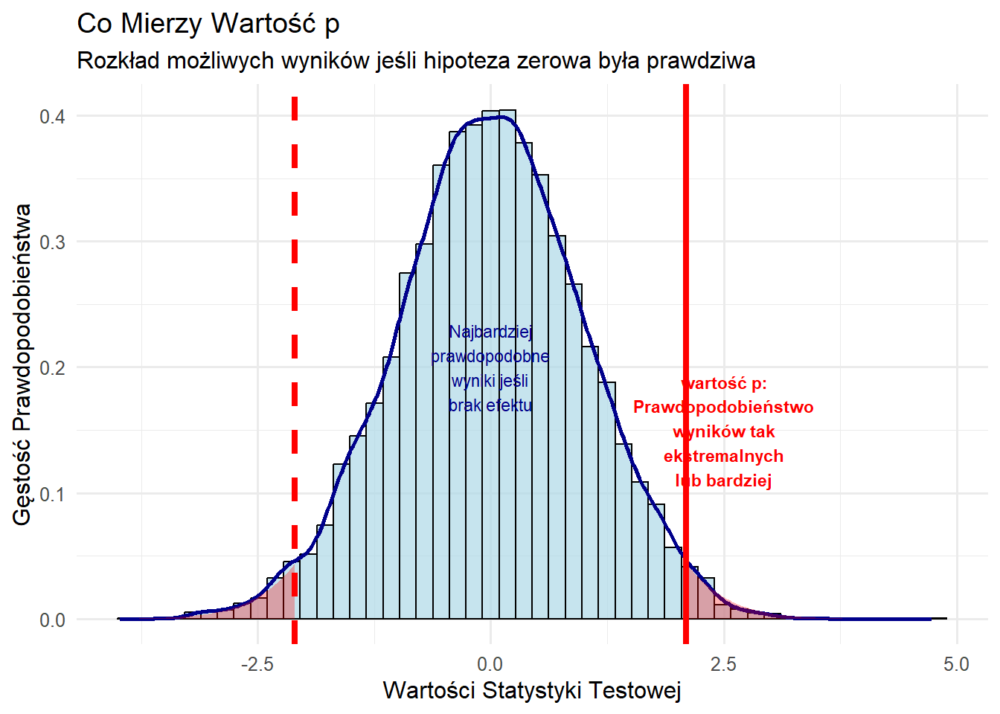
Niebieski rozkład pokazuje wyniki oczekiwane pod H\_0. Czerwone linie wyznaczają nasz wynik, a zacieniowane na czerwono obszary — wartość p, czyli prawdopodobieństwo uzyskania wyników co najmniej tak skrajnych wyłącznie wskutek przypadku.
Przykłady: wartość p w kontekście
Przykład 1: Skuteczność reklam kampanijnych
Pytanie badawcze: Czy reklamy telewizyjne zwiększają udział kandydata w głosach?
Projekt: Kandydat emituje reklamy w 20 losowo wybranych miastach, a w 20 podobnych miastach — nie.
# Symulacja eksperymentu z reklamami kampaniiset.seed(123)# Realistyczne danead_cities <-c(rep("Z reklamą", 20), rep("Bez reklam", 20))vote_share <-c(rnorm(20, 0.58, 0.08), # Miasta z reklamą: średnio 58%, SD 8%rnorm(20, 0.54, 0.08) # Miasta bez reklamy: średnio 54%, SD 8%)campaign_data <-data.frame(treatment =factor(ad_cities, levels =c("Bez reklam", "Z reklamą")),vote_share = vote_share)# Zaobserwowana różnicamean_with_ads <-mean(campaign_data$vote_share[campaign_data$treatment =="Z reklamą"])mean_no_ads <-mean(campaign_data$vote_share[campaign_data$treatment =="Bez reklam"])observed_diff <- mean_with_ads - mean_no_ads# Test t (dwustronny domyślnie)t_test_result <-t.test(vote_share ~ treatment, data = campaign_data)p_val <- t_test_result$p.value# Wykresggplot(campaign_data, aes(x = treatment, y = vote_share, fill = treatment)) +geom_boxplot(alpha =0.7, width =0.5) +geom_jitter(width =0.15, alpha =0.6, size =2.5) +stat_summary(fun = mean, geom ="point", shape =23, size =4, fill ="red", color ="darkred") +labs(title ="Czy reklamy kampanijne zwiększają poparcie?",subtitle =paste0("Zaobserwowana różnica: ", round(observed_diff*100, 1), " p.p., p-wartość = ", round(p_val, 3)),x ="Warunek eksperymentalny",y ="Udział w głosach (%)",caption ="Czerwone romby pokazują średnie grupowe. Każda kropka to jedno miasto." ) +scale_y_continuous(labels =function(x) paste0(x*100, "%")) +scale_fill_manual(values =c("Bez reklam"="#E8E8E8", "Z reklamą"="#4CAF50")) +theme_minimal() +theme(legend.position ="none")
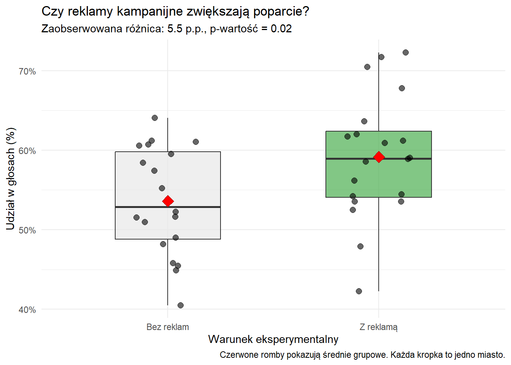
Interpretacja:
Pudełka pokazują środkowe 50% miast w każdej grupie
Czerwone romby to średnie grupowe
Kropki to poszczególne miasta
Jeśli p < 0,05, mało prawdopodobne, by różnica wynikała wyłącznie z przypadku
Przykład 2: Pogoda a frekwencja wyborcza
Pytanie badawcze: Czy deszcz zmniejsza frekwencję?
# Symulacja danych o pogodzie i frekwencjiset.seed(456)options(scipen =999)# Dane z wyraźną różnicąn_elections <-30weather_data <-data.frame(weather =factor(c(rep("Deszczowo", n_elections), rep("Słonecznie", n_elections)),levels =c("Słonecznie", "Deszczowo")),turnout =c(rnorm(n_elections, 0.62, 0.06), # Dni deszczowe: niższa frekwencjarnorm(n_elections, 0.68, 0.06) # Dni słoneczne: wyższa frekwencja ))# Statystykirain_turnout <-mean(weather_data$turnout[weather_data$weather =="Deszczowo"])sunny_turnout <-mean(weather_data$turnout[weather_data$weather =="Słonecznie"])weather_diff <- sunny_turnout - rain_turnout # Słonecznie minus Deszczowo# Test dwustronnyweather_test <-t.test(turnout ~ weather, data = weather_data)weather_p <- weather_test$p.valueci_lower <- weather_test$conf.int[1] # CI odpowiada Słonecznie - Deszczowoci_upper <- weather_test$conf.int[2]# Wykresggplot(weather_data, aes(x = weather, y = turnout, fill = weather)) +geom_boxplot(alpha =0.7, width =0.5) +geom_jitter(width =0.15, alpha =0.6, size =2.5) +stat_summary(fun = mean, geom ="point", shape =23, size =4, fill ="black", color ="black") +labs(title ="Czy pogoda wpływa na frekwencję wyborczą?",subtitle =paste0("Różnica: ", round(weather_diff*100, 1), " p.p. (95% PU: [", round(ci_lower*100, 1), ", ", round(ci_upper*100, 1), "]), p = ", round(weather_p, 3)),x ="Warunki pogodowe",y ="Frekwencja (%)",caption ="Czarne romby to średnie. Każda kropka to jedne wybory." ) +scale_y_continuous(labels =function(x) paste0(x*100, "%")) +scale_fill_manual(values =c("Deszczowo"="#B3D9FF", "Słonecznie"="#FFD700")) +theme_minimal() +theme(legend.position ="none")
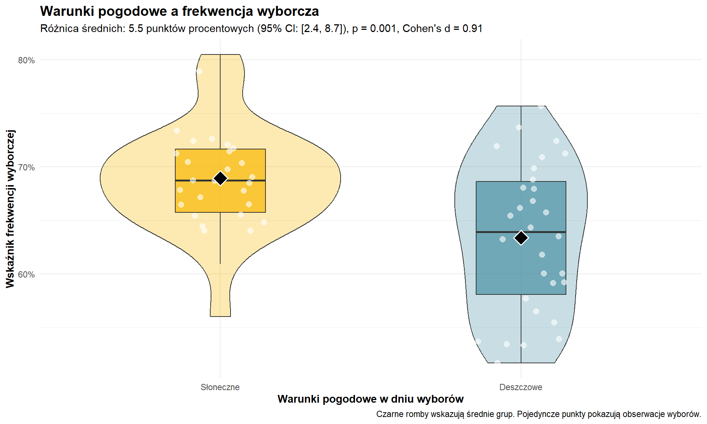
Podsumowanie wyników:
Frekwencja w dni słoneczne: 68.9%
Frekwencja w dni deszczowe: 63.4%
Różnica: 5.5 p.p.
p-wartość: 0.0008
Interpretacja: Gdyby pogoda nie miała wpływu, istniałoby tylko 0.08% szans, by zaobserwować tak dużą lub większą różnicę. To silny dowód, że pogoda wpływa na frekwencję.
Przykład 3: Wynik nieistotny statystycznie
Pytanie badawcze: Czy czas w mediach społecznościowych przewiduje wiedzę polityczną?
# Przypadek bez istotnej zależnościset.seed(999)n_people <-150# Dane z praktycznie brakiem relacjisocial_media_data <-data.frame(social_media_hours =runif(n_people, 0, 8),political_knowledge =rnorm(n_people, 50, 15))# Dodajemy maleńki, trudny do wykrycia efektsocial_media_data$political_knowledge <- social_media_data$political_knowledge +0.5* social_media_data$social_media_hours +rnorm(n_people, 0, 14)# Model liniowysm_model <-lm(political_knowledge ~ social_media_hours, data = social_media_data)sm_summary <-summary(sm_model)sm_coef <-coef(sm_model)[2]sm_p <- sm_summary$coefficients[2, 4]sm_se <- sm_summary$coefficients[2, 2]r_squared <- sm_summary$r.squared# Wykres rozrzutu z linią regresjiggplot(social_media_data, aes(x = social_media_hours, y = political_knowledge)) +geom_point(alpha =0.5, color ="steelblue") +geom_smooth(method ="lm", se =TRUE, color ="red", fill ="pink", alpha =0.3) +labs(title ="Korzystanie z mediów społecznościowych a wiedza polityczna",subtitle =paste0("Efekt: ", round(sm_coef, 2), " pkt/godz. (SE = ", round(sm_se, 2), "), p = ", round(sm_p, 3),", R² = ", round(r_squared, 3)),x ="Godziny dziennie w mediach społecznościowych",y ="Wynik wiedzy politycznej (0–100)",caption ="Szeroki przedział ufności wskazuje na dużą niepewność zależności" ) +theme_minimal() +annotate("text", x =6, y =20, label ="Brak istotności\nstatystycznej", color ="red", fontface ="bold", size =4)
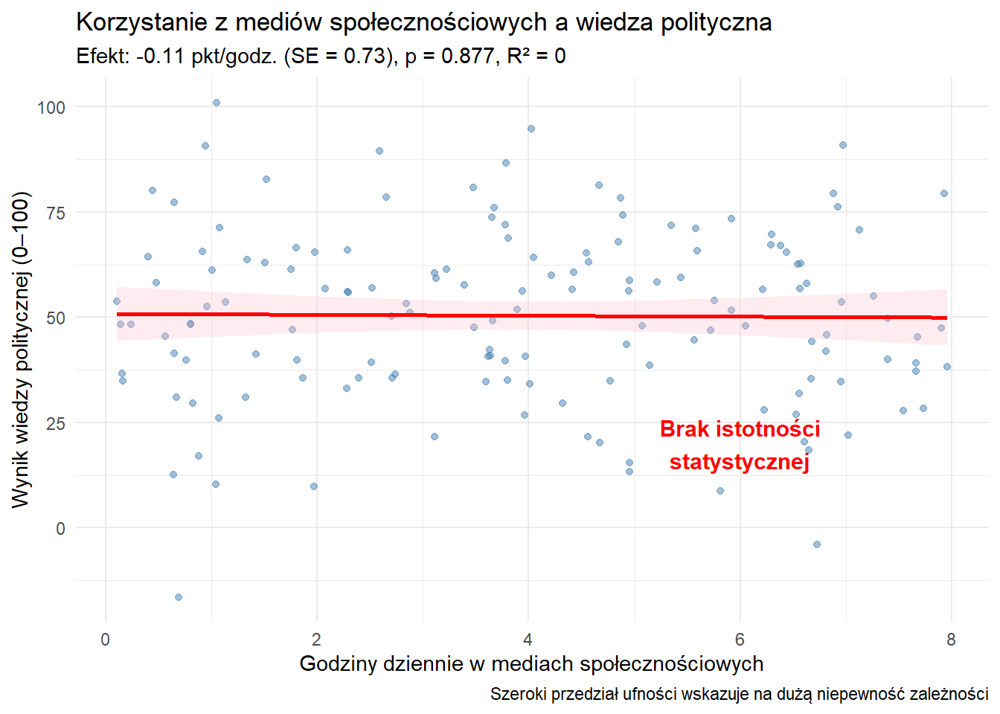
Najważniejsze wnioski przy braku istotności:
Nie możemy wnioskować, że „nie ma związku”
Możemy jedynie stwierdzić, że brakuje dowodów na związek
Możliwe powody braku istotności:
efekt naprawdę nie istnieje,
efekt jest zbyt mały względem wielkości próby,
błąd pomiaru zaciemnia prawdziwą relację.
Próg 0,05: konwencja, nie prawo natury
Konwencjonalny próg p < 0,05 dla „istotności statystycznej” to historyczna konwencja zaproponowana przez Ronalda Fishera w latach 20. XX w.
# Wizualizacja ciągłego charakteru wartości pp_values <-seq(0.001, 0.2, by =0.001)p_data <-data.frame(p = p_values,significant =ifelse(p_values <0.05, "Istotny", "Nieistotny"))ggplot(p_data, aes(x = p, y =1, fill = significant)) +geom_tile(aes(height =1)) +geom_vline(xintercept =0.05, color ="black", linewidth =1.5) +scale_fill_manual(values =c("Istotny"="#4CAF50", "Nieistotny"="#FF6B6B")) +scale_x_continuous(breaks =c(0.001, 0.01, 0.05, 0.1, 0.15, 0.2),labels =c("0.001", "0.01", "0.05", "0.10", "0.15", "0.20")) +labs(title ="Arbitralność progu 0,05",subtitle ="p = 0,049 i p = 0,051 są praktycznie identyczne, choć traktowane odmiennie",x ="p-wartość",y ="",fill ="Konwencjonalna\ninterpretacja" ) +theme_minimal() +theme(axis.text.y =element_blank(),axis.ticks.y =element_blank(),panel.grid.major.y =element_blank(),panel.grid.minor.y =element_blank()) +annotate("text", x =0.025, y =1, label ="Silne\ndowody", color ="white", fontface ="bold") +annotate("text", x =0.125, y =1, label ="Słabe\ndowody", color ="white", fontface ="bold") +annotate("text", x =0.05, y =0.5, label ="Arbitralny\npróg", color ="black", fontface ="bold", size =3)
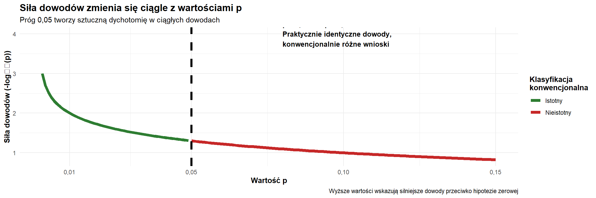
Kluczowe uwagi:
Nic „magicznego” nie dzieje się przy p = 0,05
Różne dziedziny stosują różne progi (np. fizyka: p ≈ 3 × 10⁻⁷, „5 sigma”)
Współcześnie zaleca się raportowanie dokładnych p-wartości i wielkości efektu
Dychotomia „istotny/nieistotny” bywa myląca
Częste nieporozumienia wokół wartości p
Błędne interpretacje:
„p = 0,03 oznacza 97% szans, że leczenie działa”
Błąd: p nie podaje prawdopodobieństwa prawdziwości hipotezy
„p = 0,20 oznacza mały efekt”
Błąd: p mierzy siłę dowodu, nie wielkość efektu
„p > 0,05 dowodzi, że efektu nie ma”
Błąd: brak dowodów ≠ dowód braku
Poprawne interpretacje:
„p = 0,03 oznacza: gdyby nie było efektu, tak skrajne dane wystąpiłyby tylko w 3% przypadków”
„p = 0,20 oznacza słabe dowody przeciw hipotezie zerowej”
„p > 0,05 oznacza, że nie umiemy wiarygodnie odróżnić sygnału od szumu”
Istotność statystyczna a istotność praktyczna
# Różnica między istotnością statystyczną a praktycznąset.seed(42)# Mały, ale statystycznie istotny efekt (duża próba)large_n <-10000group_a_large <-rnorm(large_n, mean =100, sd =15)group_b_large <-rnorm(large_n, mean =100.5, sd =15) # Znikoma różnica# Duży, ale nieistotny statystycznie efekt (mała próba)small_n <-20group_a_small <-rnorm(small_n, mean =100, sd =15)group_b_small <-rnorm(small_n, mean =105, sd =15) # Duża różnica# Testytest_large <-t.test(group_a_large, group_b_large)test_small <-t.test(group_a_small, group_b_small)# Dane do porównaniacomparison_data <-data.frame(Scenario =c("Duża próba\n(n=10 000)", "Mała próba\n(n=20)"),Effect_Size =c(mean(group_b_large) -mean(group_a_large),mean(group_b_small) -mean(group_a_small)),P_Value =c(test_large$p.value, test_small$p.value),Significant =c(test_large$p.value <0.05, test_small$p.value <0.05))ggplot(comparison_data, aes(x = Effect_Size, y =-log10(P_Value))) +geom_point(aes(color = Significant, shape = Scenario), size =8) +geom_hline(yintercept =-log10(0.05), linetype ="dashed", color ="red") +geom_text(aes(label = Scenario), vjust =-1.5, size =3) +scale_color_manual(values =c("FALSE"="gray60", "TRUE"="darkgreen")) +labs(title ="Istotność statystyczna vs. praktyczna",subtitle ="Duże próby wykrywają mikroskopijne efekty; małe próby mogą „przegapić” duże",x ="Wielkość efektu (różnica średnich)",y ="Istotność statystyczna\n(-log10 p-wartości)",caption ="Punkty powyżej czerwonej linii są istotne statystycznie (p < 0,05)" ) +theme_minimal() +annotate("text", x =0.5, y =-log10(0.05), label ="p = 0,05", color ="red", size =3) +theme(legend.position ="bottom")
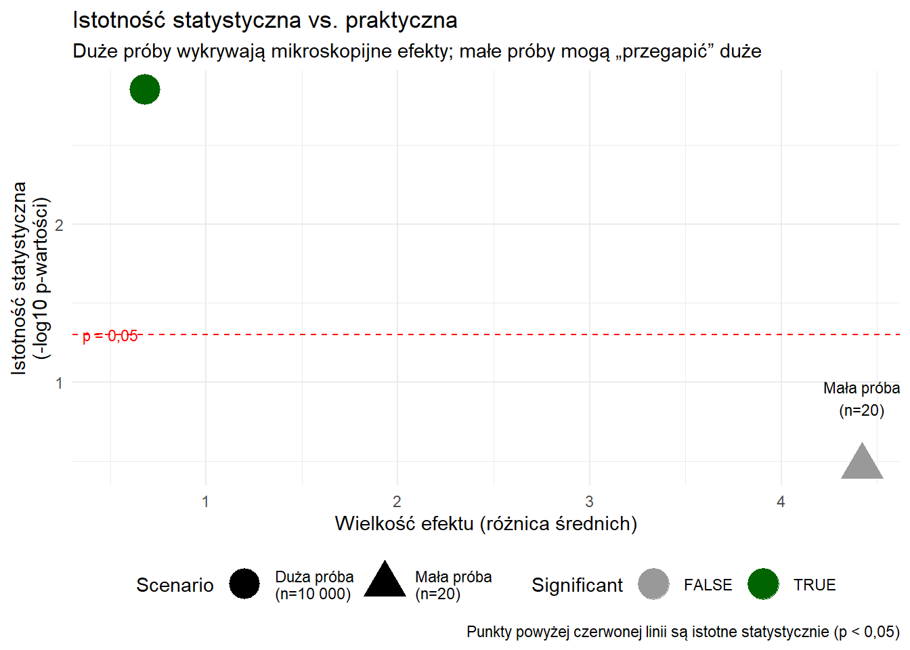
Wyniki porównania:
Duża próba (n = 10 000 na grupę):
Różnica: 0.68 jednostki
p-wartość: 1.412962e-03
Istotność statystyczna: Tak
Istotność praktyczna: raczej nie (różnica minimalna)
Mała próba (n = 20 na grupę):
Różnica: 4.42 jednostki
p-wartość: 0.344
Istotność statystyczna: Nie
Istotność praktyczna: możliwe, że tak (różnica duża)
Kluczowa lekcja: Zawsze oceniaj zarówno istotność statystyczną, jak i wielkość efektu.
Związek między p-wartościami a przedziałami ufności
Istnieje bezpośrednia korespondencja:
Jeśli p < 0,05 dla testu „brak różnicy”, 95% PU nie obejmuje zera
Jeśli p > 0,05, 95% PU obejmuje zero
# Ilustracja relacji p i PUset.seed(789)# Kilka "badań" z różnymi efektamistudies <-data.frame(study = LETTERS[1:6],effect =c(2.5, 2.2, 0.9, 0.3, -0.2, -1.5),se =rep(1, 6))studies$ci_lower <- studies$effect -1.96* studies$sestudies$ci_upper <- studies$effect +1.96* studies$sestudies$p_value <-2*pnorm(-abs(studies$effect/studies$se))studies$significant <- studies$p_value <0.05ggplot(studies, aes(x = study, y = effect, color = significant)) +geom_hline(yintercept =0, linetype ="solid", color ="gray50", linewidth =1) +geom_errorbar(aes(ymin = ci_lower, ymax = ci_upper), width =0.2, linewidth =1) +geom_point(size =4) +scale_color_manual(values =c("FALSE"="gray60", "TRUE"="darkgreen"),labels =c("Nieistotny", "Istotny")) +labs(title ="Przedziały ufności a istotność statystyczna",subtitle ="PU wykluczające zero odpowiadają p < 0,05",x ="Badanie",y ="Wielkość efektu",color ="Istotność statystyczna",caption ="Słupki błędów to 95% przedziały ufności" ) +theme_minimal() +annotate("text", x =0.5, y =0.2, label ="Brak efektu", color ="gray50", fontface ="italic", size =3) +geom_text(aes(label =paste0("p=", round(p_value, 3))), vjust =-2, size =3)
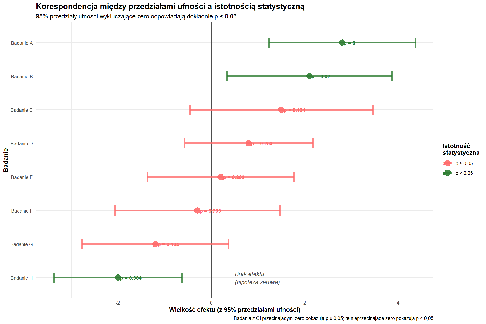
Obserwacje:
Badania A, B: PU nie obejmują zera → p < 0,05
Badania C, D, E, F: PU obejmują zero → p > 0,05
Odległość od zera jest odwrotnie skorelowana z wielkością p
if(t_result$p.value <0.05) {cat("Odrzucamy hipotezę zerową. Dowody sugerują,\n")cat("że weryfikacja faktów istotnie zmniejsza wiarę w dezinformację.\n")} else {cat("Nie odrzucamy hipotezy zerowej. Brakuje wystarczających\n")cat("dowodów, że weryfikacja faktów wpływa na wiarę w dezinformację.\n")}
Odrzucamy hipotezę zerową. Dowody sugerują,
że weryfikacja faktów istotnie zmniejsza wiarę w dezinformację.
Uwaga o hipotezach kierunkowych: Jeśli teoria przewiduje kierunek (np. weryfikacja faktów zmniejsza wiarę w dezinformację), dopuszczalne są testy jednostronne. Ustaw alternative = "greater" dla \mu\_{\text{Kontrola}} > \mu\_{\text{Weryfikacja faktów}} lub alternative = "less" dla odwrotności. Gdy każda różnica ma znaczenie teoretyczne, standardem pozostaje test dwustronny.
Podsumowanie: praktyczne wskazówki dotyczące istotności
Najpierw oceń wielkość efektu
Jaka jest skala różnicy/zależności?
Czy jest praktycznie istotna?
Spójrz na p-wartość
p < 0,05: dowody przeciw H\_0
p > 0,05: niewystarczające dowody do odrzucenia H\_0
Interpretuj przedziały ufności
Określają zakres wiarygodnych wartości efektu
Szerokie PU = większa niepewność
Uwzględnij kontekst badania
Wielkość próby wpływa na moc testu
Jakość projektu ważniejsza niż sama p-wartość
Wielokrotne testowanie zwiększa ryzyko fałszywych trafień (błąd I rodzaju)
Zasady podstawowe:
Istotność statystyczna ≠ istotność praktyczna. Wartość p mierzy „zaskoczenie” przy założeniu prawdziwości H\_0, a nie prawdopodobieństwo prawdy. Brak dowodów to nie dowód braku. Zawsze raportuj p-wartości wraz z wielkością efektu.
Istotność statystyczna to narzędzie do odróżniania sygnału od szumu, a nie miara ważności czy prawdziwości. Stosuj ją rozważnie — w szerszym kontekście merytorycznym i praktycznej istotności.
2.31 Regresja: prawdopodobnie najważniejsza metoda badawcza w politologii
Wyobraź sobie typowy nagłówek sprzed wyborów: „Poparcie dla kandydatki/kandydata Smith sięga 68%”. Intuicyjnie wnioskujesz, że ma dobre perspektywy — nie gwarancję zwycięstwa, ale silną pozycję.
Ta intuicyjna ocena dobrze oddaje istotę analizy regresji. Wykorzystujesz jedną informację (poziom poparcia), aby przewidzieć inną (wynik wyborczy), zakładając, że wyższe poparcie zwykle łączy się z lepszym rezultatem, choć zależność nie jest doskonała.
Analiza regresji systematyzuje ten proces i pozwala badaczom:
generować predykcje na podstawie dostępnych danych,
identyfikować, które czynniki mają największe znaczenie,
kwantyfikować niepewność prognoz,
testować hipotezy i teorie na danych empirycznych.
2.32 Zmienne i zmienność
Definicja zmiennej
Zmienna to cecha, która może przyjmować różne wartości w różnych jednostkach obserwacji. W politologii:
Jednostki analizy: państwa, osoby, wybory, polityki publiczne, lata
Zmienne: PKB, preferencja wyborcza, indeks demokracji, wystąpienie konfliktu
2.33 Czym jest regresja?
Analiza regresji to podstawowe narzędzie statystyczne w politologii. Modeluje związki między zmiennymi i operacjonalizuje nasz fundamentalny model statystyczny.
Model fundamentalny
Model to odwzorowanie obiektu lub systemu w użyteczny sposób. Mogą to być reprezentacje fizyczne (np. makiety architektoniczne) lub abstrakcyjne (np. równania opisujące zjawiska).
Sedno myślenia statystycznego można zapisać jako:
Y = f(X) + \text{błąd}
To równanie mówi, że nasz wynik (Y) równa się pewnej funkcji predyktorów (X) plus nieprzewidywalna wariancja.
Składniki:
Y — zmienna zależna (zjawisko, które wyjaśniamy),
X — zmienna(e) niezależna(e) (czynniki wyjaśniające),
f() — postać zależności (często zakładamy liniową),
błąd (\epsilon) — niewyjaśniona zmienność.
Na tym fundamencie opierają się wszystkie analizy — od prostych korelacji po złożone algorytmy uczenia maszynowego.
Regresja pomaga odpowiadać na pytania takie jak:
O ile edukacja zwiększa uczestnictwo polityczne?
Jakie czynniki przewidują sukces wyborczy?
Czy instytucje demokratyczne sprzyjają wzrostowi gospodarczemu?
2.34 Budowanie intuicji: analogia sportowa
Zanim przejdziemy do polityki, spójrzmy na prostszy kontekst. Chcemy przewidywać liczbę punktów koszykarzy na podstawie wzrostu. Oczekujemy, że:
wyżsi gracze przeciętnie zdobywają więcej punktów,
sam wzrost nie determinuje wyniku (liczą się też umiejętności, pozycja, minuty gry),
występuje duża zmienność — niżsi zawodnicy też potrafią dużo rzucać.
Wykres wzrostu (oś X) i punktów (oś Y) prawdopodobnie pokaże:
rosnący trend punktów wraz ze wzrostem,
spory rozrzut wokół trendu,
linię streszczającą ogólną zależność.
To jest istota regresji: znaleźć linię najlepiej podsumowującą związek między zmiennymi, przyznając, że korelacja jest niedoskonała.
# Tworzymy przykład "koszykarski" dla intuicjiset.seed(123)n_players <-100# Realistyczne dane: wzrost i punktyheight_inches <-rnorm(n_players, 78, 4) # Średnio ok. 6'6"# Punkty rosną ze wzrostem, ale z dużą wariancjąpoints_per_game <-2+0.3* (height_inches -70) +rnorm(n_players, 0, 5)points_per_game <-pmax(0, points_per_game) # Brak ujemnych wartościbasketball_data <-data.frame(height = height_inches,points = points_per_game)# Wizualizacjaggplot(basketball_data, aes(x = height, y = points)) +geom_point(alpha =0.6, color ="orange", size =2) +geom_smooth(method ="lm", color ="blue", size =1.2) +labs(title ="Wzrost a zdobyte punkty: podstawowa idea regresji",subtitle ="Niebieska linia pokazuje zależność przeciętną; punkty to poszczególni zawodnicy",x ="Wzrost (cale)",y ="Punkty na mecz",caption ="Każdy punkt to jeden gracz; linia podsumowuje ogólny wzorzec" ) +theme_minimal()
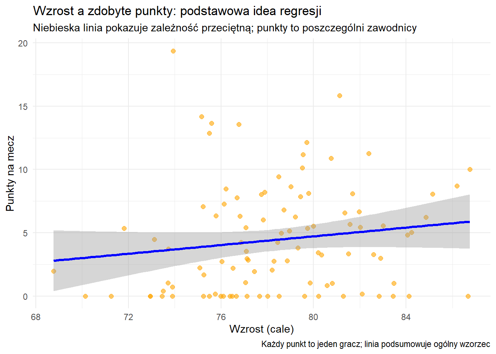
Interpretacja: Każdy pomarańczowy punkt to jeden zawodnik. Niebieska linia pokazuje trend — wyżsi gracze przeciętnie zdobywają więcej punktów. Rozrzut wokół linii odzwierciedla inne czynniki (umiejętności, pozycję, minuty gry, system zespołu itp.).
Kluczowa myśl: Linia nie przechodzi przez wszystkie punkty, bo wzrost to tylko jeden z wielu czynników. „Szum” wokół linii to efekt pominiętych zmiennych.
2.35 Prosta regresja liniowa
Podstawowe równanie formalizuje tę relację:
Y_i = \alpha + \beta X_i + \epsilon_i
Gdzie:
Y\_i — wynik dla obserwacji i,
X\_i — predyktor dla obserwacji i,
\alpha — wyraz wolny (oczekiwane Y, gdy X=0),
\beta — nachylenie (zmiana Y na jednostkę X),
\epsilon\_i — składnik losowy.
W przykładzie koszykarskim:
Y\_i — punkty gracza i,
X\_i — wzrost gracza i,
\alpha — bazowa liczba punktów (konstrukt matematyczny przy wzroście 0),
\beta — dodatkowe punkty na cal wzrostu,
\epsilon\_i — inne czynniki wpływające na zdobycz punktową.
Przykład: edukacja a partycypacja polityczna
Czy edukacja zwiększa partycypację polityczną?
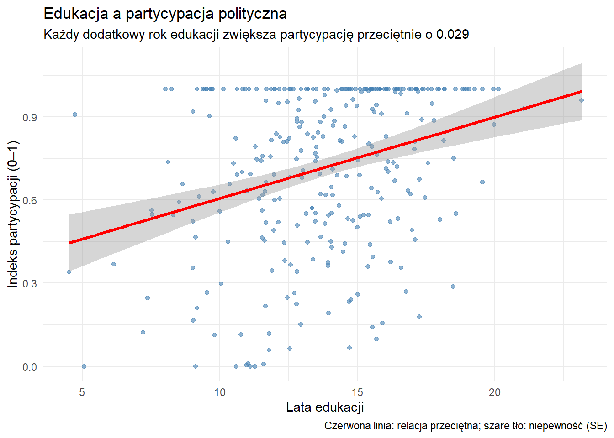
Wyniki statystyczne:
• Każdy dodatkowy rok edukacji zwiększa partycypację o 0.029 punktu(y)
• Pozostałe 90.8 % to czynniki niewobecne w modelu
Interpretacja R²: R² to odsetek zmienności zmiennej zależnej wyjaśniony przez model. Np. R² = 0,3 oznacza, że 30% zróżnicowania partycypacji tłumaczą zmienne w modelu, a 70% pozostaje niewyjaśnione.
Rozpisanie równania regresji na elementy
W odniesieniu do przykładu edukacja–partycypacja:
Y_i = \alpha + \beta X_i + \epsilon_i
Y\_i: partycypacja polityczna osoby i,
\alpha (wyraz wolny): oczekiwana partycypacja przy 0 latach edukacji,
\beta (nachylenie): zmiana partycypacji na dodatkowy rok edukacji,
X\_i: liczba lat edukacji osoby i,
\epsilon\_i: inne czynniki (dochód, wiek, zainteresowanie polityką itd.).
Ramowy opis: Partycypacja = poziom bazowy (\alpha) + wpływ edukacji (\beta \times edukacja) + niewyjaśnione czynniki (\epsilon).
2.36 Regresja wieloraka: złożoność zjawisk
Rzeczywistość rzadko zależy od jednego czynnika. Na partycypację wpływa edukacja, ale też dochód, wiek, zainteresowanie polityką… Regresja wieloraka pozwala uwzględnić kilka zmiennych jednocześnie.
Co oznacza „kontrolując za …”?
To trudne, ale kluczowe pojęcie. Analogią może być porównanie szkół.
Porównanie szkół: Surowe wyniki testów uczniów szkół prywatnych i publicznych nie wystarczą. Uczniowie szkół prywatnych częściej pochodzą z zamożniejszych i lepiej wykształconych rodzin. Obserwowane różnice mogą odzwierciedlać tło rodzinne, a nie „jakość szkoły”.
Uczciwe porównanie wymaga zestawiania uczniów o podobnym tle — zamożnych ze zamożnymi, średniozamożnych ze średniozamożnymi, w obrębie obu typów szkół.
„Kontrola statystyczna” realizuje to porównanie matematycznie. Gdy mówimy: „Edukacja zwiększa partycypację o 0,04 punktu, kontrolując dochód i wiek”, mamy na myśli:
porównanie osób o tym samym dochodzie i wieku,
z których ta z dłuższą edukacją uczestniczy przeciętnie o 0,04 punktu bardziej,
czyli „oczyszczamy” wpływ potencjalnych konfunderów.
Każde \beta\_j interpretuje się jako efekt X\_jprzy stałych pozostałych zmiennych.
Przykład: determinanty sukcesu wyborczego
Wpływ włączenia zmiennych kontrolnych
Model
Efekt poparcia
Wartość p
Prosty (tylko poparcie)
0.781
0
Wieloraki (kontrola: gospodarka i wydatki)
0.750
0
Determinanty sukcesu wyborczego:
• ↑ o 1 p.p. w poparciu → +0.7 pkt marginesu zwycięstwa
• ↑ o 1 p.p. wzrostu PKB → +2.3 pkt marginesu
• +1 mln USD wydatków → +0.03 pkt marginesu
Te czynniki łącznie wyjaśniają 71.5% zróżnicowania wyników wyborów
Pozostałe 28.5% to czynniki niewobecne w modelu
Wniosek: Efekt poparcia zmienia się po dodaniu innych zmiennych. Dlatego kontrola za konfunderami jest kluczowa — pominięte zmienne mogą silnie zniekształcać wnioski.
2.37 Wyzwanie wnioskowania przyczynowego: czy pieniądze „kupują” wybory?
To pytanie pokazuje ograniczenia regresji i różnicę między korelacją a przyczynowością.
Obserwacja: Kandydaci, którzy wydają więcej, zwykle dostają więcej głosów. Czy wydatki powodują głosy?
Alternatywne wyjaśnienia:
Odwrócona przyczynowość: popularni kandydaci przyciągają więcej darczyńców,
Wspólna przyczyna: charyzma zwiększa i darowizny, i poparcie,
Selekcja: dobrze finansowani częściej startują w konkurencyjnych wyścigach.
Kluczowy problem: korelacja ≠ przyczynowość.
Fundamentalny problem wnioskowania przyczynowego
Aby ustalić skutek przyczynowy, chcielibyśmy obserwować tego samego kandydata w dwóch równoległych scenariuszach:
A: wydaje 5 mln,
B: wydaje 1 mln,
efekt = różnica w odsetku głosów.
Problem: obserwujemy tylko jeden scenariusz. To tzw. „fundamentalny problem wnioskowania przyczynowego”.
Strategie identyfikacji przyczynowej
Badacze stosują różne podejścia:
1. Eksperymenty losowe (złoty standard)
losowy przydział do grupy traktowanej/kontrolnej,
grupy identyczne poza „traktowaniem”,
różnice można przypisać traktowaniu.
2. Eksperymenty naturalne
bardzo wyrównane wybory tworzą quasi-losową zmienność,
zmiany polityk dotyczą jednych obszarów, a innych nie,
współczynniki interpretujemy przyczynowo pod silnymi założeniami,
ograniczenie: musimy zmierzyć wszystkie istotne konfudery.
# Konfudowanie w danych o finansowaniu kampaniiset.seed(789)n_candidates <-500# Jakość kandydata wpływa i na wydatki, i na głosycandidate_quality <-rnorm(n_candidates, 0, 1)# Jakość → fundraisingspending <-50+20* candidate_quality +rnorm(n_candidates, 0, 10)spending <-pmax(0, spending)# Głosy zależą od wydatków ORAZ jakościvote_share <-30+0.1* spending +15* candidate_quality +rnorm(n_candidates, 0, 5)vote_share <-pmax(0, pmin(100, vote_share))campaign_data <-data.frame(spending = spending,quality = candidate_quality,vote_share = vote_share)# Porównanie analiznaive_model <-lm(vote_share ~ spending, data = campaign_data)controlled_model <-lm(vote_share ~ spending + quality, data = campaign_data)# Prawdziwy efekt wydatków to 0,1comparison_results <-data.frame(Model =c("Naiwny (bez kontroli)", "Właściwy (kontrola jakości)"),Efekt_wydatkow =c(coef(naive_model)[2], coef(controlled_model)[2]),Prawdziwy_efekt =c(0.1, 0.1)) %>%mutate( Błąd = Efekt_wydatkow - Prawdziwy_efekt,Kierunek_biasu = dplyr::case_when(abs(Błąd) <0.05~"Bez istotnego biasu", Błąd >0~"Bias w górę", Błąd <0~"Bias w dół" ) )kable(comparison_results, digits =3,caption ="Znaczenie kontroli za konfunderami") %>%kable_styling(bootstrap_options =c("striped", "hover"))
Znaczenie kontroli za konfunderami
Model
Efekt_wydatkow
Prawdziwy_efekt
Błąd
Kierunek_biasu
Naiwny (bez kontroli)
0.681
0.1
0.581
Bias w górę
Właściwy (kontrola jakości)
0.155
0.1
0.055
Bias w górę
# Wizualizacja konfudowaniaggplot(campaign_data, aes(x = spending, y = vote_share, color = quality)) +geom_point(alpha =0.7) +geom_smooth(method ="lm", se =FALSE, color ="red", linetype ="dashed") +scale_color_gradient2(low ="blue", mid ="gray", high ="red", midpoint =0, name ="Jakość\nkandydata") +labs(title ="Konfudowanie w finansowaniu kampanii",subtitle ="Czerwona linia: naiwna korelacja; prawdziwy efekt wymaga kontroli jakości",x ="Wydatki kampanijne (tys. USD)",y ="Odsetek głosów (%)",caption ="Kolor odzwierciedla jakość kandydata — koreluje i z wydatkami, i z głosami" ) +theme_minimal()
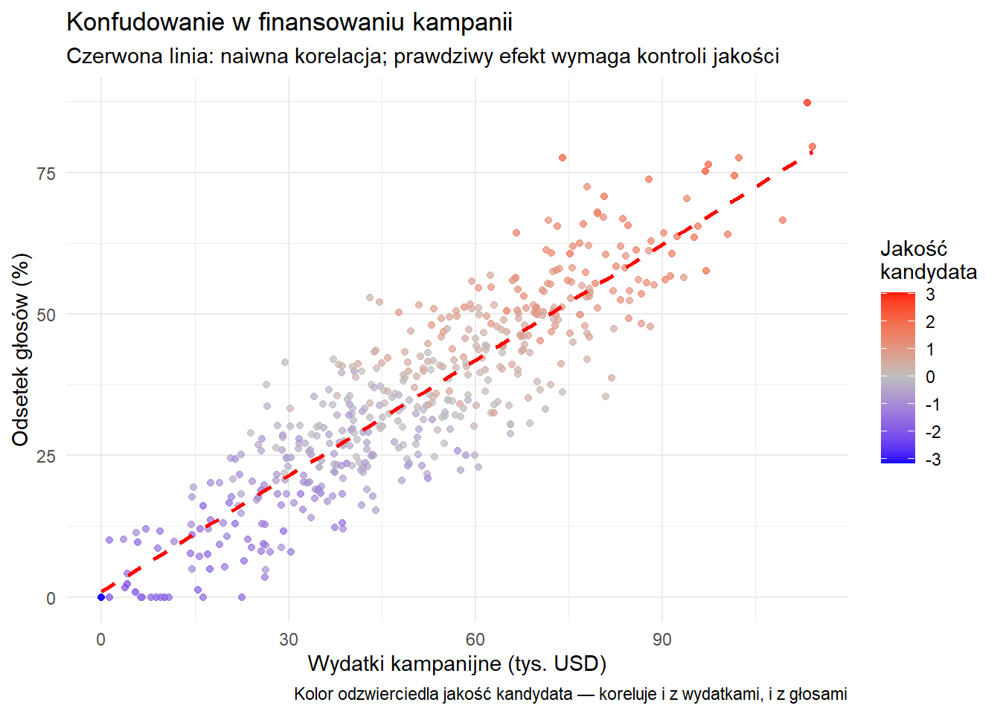
Kluczowa lekcja: Bez kontroli za „jakość kandydata” przeszacowujemy wpływ wydatków. Naiwna analiza myli efekt jakości z efektem wydatków.
Jasne — poniżej masz polską wersję ostatniego fragmentu z zachowaniem układu Quarto i działającego kodu R.
2.38 Najczęstsze pułapki w analizie regresji (*)
Pułapka 1: Mylenie istotności statystycznej z praktyczną
Problem: Uznawanie bardzo małych, choć istotnych statystycznie efektów za merytorycznie ważne wyniki.
Dlaczego się zdarza: Duże próby sprawiają, że maleńkie efekty stają się istotne statystycznie. Badanie 100 000 wyborców może „wykryć”, że negatywne reklamy obniżają frekwencję o 0,0001 p.p. przy p < 0,001.
Problem: Wnioskowanie o zależnościach indywidualnych na podstawie danych zagregowanych.
Klasyczny przykład: „Zamożne stany głosują na Demokratów, więc zamożne osoby głosują na Demokratów” Rzeczywistość: W obrębie stanów zamożność często koreluje z głosowaniem na Republikanów
cat(paste0("Pozostałe ", round((1-r_squared) *100, 1), "% to czynniki niewłączone do modelu\n\n"))
Pozostałe 50.1% to czynniki niewłączone do modelu
# Krok 5: Diagnostykacat("Krok 5: Założenia i diagnostyka\n")
Krok 5: Założenia i diagnostyka
plot(full_turnout_model, which =1, main ="Reszty vs. wartości dopasowane")
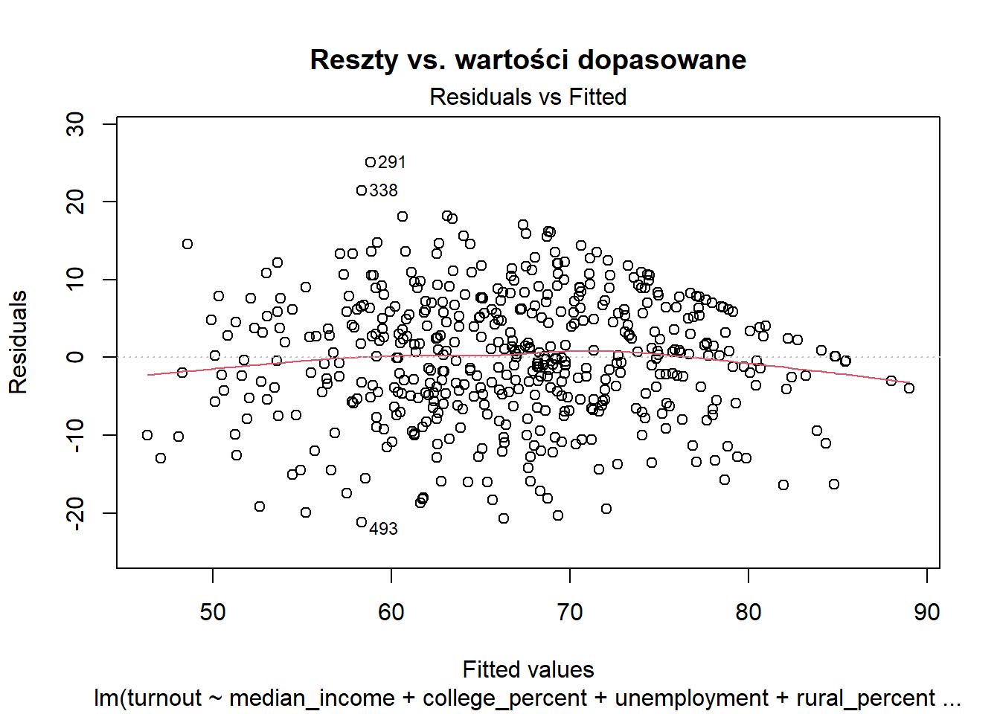
Podsumowanie analizy
Wnioski:
Poziom wykształcenia silnie przewiduje frekwencję
Czynniki ekonomiczne (dochód, bezrobocie) są istotne
Bardziej wiejskie obszary mają niższą frekwencję
Te zmienne wyjaśniają ok. 60% zróżnicowania frekwencji
Ograniczenia:
Analiza korelacyjna nie dowodzi przyczynowości
40% wariancji pozostaje niewyjaśnione
Wyniki na poziomie hrabstw nie muszą odzwierciedlać zachowań jednostek
Możliwe pominięcie ważnych zmiennych
2.41 Konkluzja
Regresja dostarcza systematycznych metod testowania teorii na danych. Choć bez odpowiednich projektów badawczych nie przesądza o przyczynowości, jest nieoceniona w rozumieniu zależności w danych obserwacyjnych.
Najważniejsze zasady:
Regresja identyfikuje najlepiej dopasowaną zależność liniową
Regresja wieloraka pozwala kontrolować konfudery
Korelacja ≠ przyczynowość
Wielkość efektu jest ważniejsza niż sama istotność
Każda analiza ma ograniczenia — trzeba je ujawnić
Umiejętności te pozwalają krytycznie oceniać twierdzenia w badaniach, debatach publicznych i dyskursie politycznym.
2.42 Praktyczne wskazówki dla badań politologicznych
Zinterpretuj każdy współczynnik merytorycznie i oceń istotność.
2.44 Niezbędny kod R na start
# Wczytanie danychdata <-read.csv("yourfile.csv") # CSV# Podstawowa eksploracjasummary(data) # Podstawowe statystykihead(data) # Pierwsze wierszetable(data$party) # Liczebności kategorii# Proste analizymean(data$age) # Średni wiekcor(data$income, data$turnout) # Korelacja dwóch zmiennych# Prosta wizualizacjahist(data$age) # Histogram wiekuplot(data$education, data$turnout) # Rozrzut# Różnice między grupamit.test(income ~ gender, data = data) # Porównanie średnich wg płci# Prosta regresjamodel <-lm(turnout ~ education, data = data)summary(model)# Regresja wielorakamodel2 <-lm(turnout ~ education + age + income, data = data)summary(model2)# Ładne wykresy w ggplot2library(ggplot2)ggplot(data, aes(x = education, y = turnout)) +geom_point() +geom_smooth(method ="lm") +labs(title ="Edukacja a frekwencja",x ="Lata edukacji", y ="Frekwencja wyborcza")
2.45 Ostatnie słowo
Statystyka to nie tylko narzędzie — to sposób myślenia o dowodach, niepewności i wnioskowaniu. Jako obywatel(ka) i badacz(ka):
Krytycznie oceniaj twierdzenia polityczne
Projektuj lepsze badania
Podejmuj bardziej świadome decyzje
Rozumiej granice tego, co możemy wiedzieć
Pamiętaj: Każda liczba opowiada historię, ale nie każda historia opowiedziana przez liczby jest prawdziwa. Twoim zadaniem jest nauczyć się je odróżniać.
Celem nie jest zostanie statystykiem, lecz politologiem, który potrafi oceniać i tworzyć rzetelne dowody. Statystyka pomaga przejść od intuicji przez hipotezy do wniosków opartych na danych. Za każdą analizą stoją realni ludzie, realne polityki i realne konsekwencje.
2.46 Appendix A: Metody Doboru Próby
Dobór Probabilistyczny (Losowy)
Metody doboru probabilistycznego opierają się na losowym doborze, gdzie każdy członek populacji ma znaną, niezerową szansę na wybór. Metody te pozwalają badaczom obliczyć błąd próby i wyciągać wnioski statystyczne o populacji.
Prosty Dobór Losowy (SRS)
Definicja: Każdy członek populacji ma równą szansę na wybór.
Zalety: Minimalizuje błąd selekcji; umożliwia prostą analizę statystyczną.
Wady: Wymaga kompletnej operatu losowania; może nie uchwycić wystarczającej liczby członków mniejszych podgrup.
Przykład: Aby wybrać 100 studentów z uniwersytetu liczącego 10 000 studentów, przypisz każdemu studentowi numer i użyj generatora liczb losowych do wybrania 100 numerów.
Najlepsze zastosowanie: Gdy populacja jest względnie jednorodna i dostępna jest kompletna lista członków populacji.
Dobór Losowy Warstwowy
Definicja: Populacja jest podzielona na wzajemnie wykluczające się podgrupy (warstwy) na podstawie wspólnych cech, a następnie próbki są losowo wybierane z każdej warstwy.
Zalety: Zapewnia reprezentację kluczowych podgrup; może poprawić precyzję dla tej samej wielkości próby co SRS; umożliwia analizę wewnątrz i między warstwami.
Wady: Wymaga wcześniejszej znajomości cech populacji do stratyfikacji; bardziej złożona analiza.
Przykład: W krajowym sondażu politycznym, podziel populację na warstwy według regionów geograficznych (Północny-Wschód, Północny-Zachód, Południe, itp.) i następnie losowo pobierz próbki z każdego regionu proporcjonalnie do ich wielkości populacji.
Najlepsze zastosowanie: Gdy populacja zawiera wyraźne podgrupy, które mogą reagować różnie na pytanie badawcze.
Dobór Grupowy (Klastrowy)
Definicja: Populacja jest podzielona na grupy (zwykle geograficzne), niektóre grupy są losowo wybierane, a wszyscy członkowie w tych grupach są badani.
Zalety: Bardziej opłacalny gdy populacja jest geograficznie rozproszona; nie wymaga kompletnej listy członków populacji.
Wady: Niższa precyzja statystyczna niż SRS lub dobór warstwowy; klastry muszą być reprezentatywne.
Przykład: Aby zbadać nawyki uczenia się uczniów szkół średnich, losowo wybierz 20 szkół średnich z całego kraju i zbadaj wszystkich uczniów w tych szkołach.
Najlepsze zastosowanie: Gdy populacja jest szeroko rozproszona geograficznie, a dotarcie do wszystkich jednostek byłoby kosztowne.
Dobór Systematyczny
Definicja: Wybieranie co k-tego elementu z listy po losowym starcie.
Zalety: Prosty w implementacji; często bardziej praktyczny niż SRS; może uniknąć efektów sąsiedztwa.
Wady: Może wprowadzić błąd, jeśli w liście występuje okresowy wzorzec.
Przykład: W zatłoczonym centrum handlowym, badaj co 20. osobę, która wchodzi, zaczynając od losowo wybranego numeru między 1 a 20.
Najlepsze zastosowanie: Gdy populacja jest uporządkowana losowo lub w sposób niezwiązany ze zmiennymi badania.
Dobór Wielostopniowy
Definicja: Łączenie wielu metod próbkowania w etapach.
Zalety: Praktyczny dla badań na dużą skalę; równoważy koszty i precyzję.
Wady: Złożony projekt i analiza; wiele etapów może kumulować błędy próbkowania.
Przykład: Najpierw losowo wybierz powiaty (dobór klastrowy), następnie losowo wybierz gospodarstwa domowe w tych powiatach (prosty dobór losowy), a na końcu wybierz jednego dorosłego z każdego gospodarstwa (dobór systematyczny).
Najlepsze zastosowanie: Badanie dużych, złożonych populacji na rozległych obszarach geograficznych.
Dobór Nieprobabilistyczny (Nielosowy)
Dobór nieprobabilistyczny nie opiera się na losowym wyborze, co oznacza, że wnioskowanie statystyczne o populacji musi być dokonywane z ostrożnością. Chociaż może wprowadzać błąd, w niektórych sytuacjach jest niezbędny.
Dobór Przypadkowy (Convenience Sampling)
Definicja: Wybieranie łatwo dostępnych podmiotów.
Zalety: Szybki, niedrogi i łatwy w implementacji.
Wady: Wysokie ryzyko błędu selekcji; ograniczona możliwość uogólniania.
Przykład: Badacz studiujący wzorce snu studentów może ankietować studentów ze swoich własnych zajęć.
Najlepsze zastosowanie: Badania pilotażowe, badania eksploracyjne lub gdy zasoby są znacznie ograniczone.
Dobór Celowy
Definicja: Wybieranie podmiotów na podstawie określonych cech istotnych dla pytania badawczego.
Zalety: Koncentruje się na istotnych przypadkach; przydatny do dogłębnych badań określonych grup.
Wady: Błąd badacza w wyborze; ograniczona możliwość uogólniania.
Przykład: W badaniu doświadczeń dyrektorów generalnych w branży technologicznej, celowo poszukuj i przeprowadzaj wywiady z dyrektorami różnych firm technologicznych.
Najlepsze zastosowanie: Badania jakościowe, studia przypadków lub badanie unikalnych populacji.
Dobór Kuli Śnieżnej
Definicja: Uczestnicy rekrutują innych uczestników ze swoich sieci.
Zalety: Dostęp do trudno dostępnych lub ukrytych populacji; bazuje na sieciach społecznych.
Wady: Próba stronnicza w kierunku osób w określonych sieciach społecznych; nie można obliczyć prawdopodobieństwa wyboru.
Przykład: W badaniu dostępu nielegalnych imigrantów do opieki zdrowotnej, badacze proszą początkowych uczestników o polecenie innych potencjalnych uczestników.
Najlepsze zastosowanie: Badanie rzadkich populacji lub wrażliwych tematów, gdzie nie istnieje operat losowania.
Dobór Kwotowy
Definicja: Wybieranie uczestników w celu spełnienia określonych kwot dla pewnych cech, aby dopasować do znanych parametrów populacji.
Zalety: Zapewnia reprezentację kluczowych grup demograficznych; szybszy i tańszy niż próbkowanie probabilistyczne; nie wymaga operatu losowania.
Wady: Nielosowy wybór w ramach kwot może wprowadzić błąd; wnioskowanie jest ograniczone.
Przykład: W badaniu rynkowym, badacze upewniają się, że przeprowadzają wywiady z określoną liczbą osób z różnych grup wiekowych, płci i poziomów dochodów.
Najlepsze zastosowanie: Komercyjne sondaże, badania rynkowe lub gdy próbkowanie probabilistyczne nie jest wykonalne.
Próby Kwotowe vs. Próby Warstwowe: Porównanie i Praktyczne Zastosowania
Choć na pierwszy rzut oka próbkowanie warstwowe i kwotowe może wydawać się podobne, istnieją między nimi fundamentalne różnice:
Kluczowe różnice między doborem warstwowym a kwotowym:
Podstawa metodologiczna:
Dobór warstwowy: Jest metodą probabilistyczną, gdzie po podziale na warstwy, jednostki w każdej warstwie są wybierane losowo.
Dobór kwotowy: Jest metodą nieprobabilistyczną, gdzie badacz lub ankieter ma swobodę wyboru konkretnych jednostek, o ile spełnione są założone kwoty.
Możliwość wnioskowania statystycznego:
Dobór warstwowy: Pozwala na obliczenie błędu próbkowania i przedziałów ufności, umożliwiając formalne wnioskowanie statystyczne.
Dobór kwotowy: Nie pozwala na obliczenie błędu próbkowania, co ogranicza możliwości formalnego wnioskowania statystycznego.
Kontrola procesu doboru:
Dobór warstwowy: Każdy etap procesu doboru jest kontrolowany przez badacza – od definicji warstw po losowy wybór jednostek w warstwach.
Dobór kwotowy: Ostateczny wybór respondentów pozostaje w rękach ankieterów, co może wprowadzać nieświadome obciążenia.
Praktyczne wdrożenie:
Dobór warstwowy: Wymaga operatu losowania (kompletnej listy populacji) do przeprowadzenia losowania.
Dobór kwotowy: Nie wymaga operatu losowania, a jedynie znajomości rozkładu kluczowych cech w populacji.
Jak dokładnie powstaje próba kwotowa w badaniach CATI lub CAPI
Proces tworzenia próby kwotowej w badaniach CATI (Computer-Assisted Telephone Interviewing) lub CAPI (Computer-Assisted Personal Interviewing) obejmuje następujące etapy:
Etap planowania i przygotowania:
Określenie zmiennych kwotowych: Najczęściej są to podstawowe zmienne demograficzne: płeć, wiek, wykształcenie, miejsce zamieszkania (miasto/wieś), region.
Ustalenie wielkości kwot: Na podstawie danych GUS lub innych wiarygodnych źródeł danych (np. Diagnoza Społeczna) określa się, jaki procent populacji stanowią poszczególne kategorie.
Przygotowanie tabeli kwotowej: Tworzy się wielowymiarową macierz kwot, np. ile powinno być kobiet w wieku 18-29 lat z wyższym wykształceniem mieszkających na wsi w województwie mazowieckim.
Przygotowanie operacyjne badania CATI:
Przygotowanie bazy telefonicznej: W przypadku CATI tworzy się bazę numerów telefonicznych (stacjonarnych i/lub komórkowych).
Losowanie numerów z puli: Często stosuje się metodę RDD (Random Digit Dialing) dla telefonów komórkowych lub losowanie z książek telefonicznych (coraz rzadziej) dla telefonów stacjonarnych.
Przypisanie numerów do zespołów ankieterskich: System CATI dystrybuuje numery do ankieterów.
Realizacja badania CATI:
Pytania filtrujące: Na początku rozmowy ankieter zadaje pytania o wiek, płeć i inne zmienne kwotowe.
Decyzja o kontynuacji: System CATI na bieżąco monitoruje wypełnienie kwot i decyduje, czy dana osoba kwalifikuje się do badania (czy jej profil demograficzny jest jeszcze potrzebny w próbie).
Realizacja wywiadu: Jeśli respondent pasuje do wciąż otwartej kwoty, przeprowadzany jest wywiad.
Automatyczne zamykanie wypełnionych kwot: Gdy dana kwota zostaje wypełniona, system przestaje przyjmować nowych respondentów o tym profilu.
Rejestracja odmów udziału w badaniu: System rejestruje odmowy według ich typu (odmowa na etapie wprowadzenia, odmowa po pytaniach filtrujących, przerwanie wywiadu) oraz dane demograficzne, jeśli zostały zebrane przed odmową.
Przygotowanie operacyjne badania CAPI:
Wybór lokalizacji: Wybiera się punkty realizacji badania, często stratyfikowane według regionów, wielkości miejscowości itd.
Instrukcje dla ankieterów: Ankieterzy otrzymują szczegółowe instrukcje dotyczące kwot, które muszą wypełnić w swoim rejonie.
Realizacja badania CAPI:
Screener: Ankieter używa krótkiego kwestionariusza selekcyjnego do określenia, czy dana osoba spełnia kryteria kwotowe.
Dobór respondenta: Ankieter sam decyduje, kogo zapytać o udział w badaniu, kierując się wytycznymi kwotowymi.
Monitorowanie realizacji kwot: Ankieterzy regularnie raportują zrealizowane wywiady, a koordynator badania monitoruje wypełnienie kwot.
Kontrola jakości i analiza odmów:
Weryfikacja wywiadów: Losowo wybrane wywiady są weryfikowane przez ponowny kontakt z respondentem.
Kontrola pracy ankieterów: W badaniach CAPI często stosuje się geolokalizację ankieterów, żeby potwierdzić, że faktycznie byli w deklarowanych lokalizacjach.
Kontrola “efektu ankietera”: Analizuje się, czy określeni ankieterzy nie mają systematycznie odmiennych wyników.
Analiza wskaźnika odpowiedzi (response rate): Oblicza się stosunek zrealizowanych wywiadów do wszystkich nawiązanych kontaktów.
Analiza struktury odmów: Sprawdza się, czy odmowy nie są systematycznie powiązane z określonymi cechami demograficznymi, co mogłoby wprowadzić błąd.
Ważenie końcowe (po realizacji badania):
Korekta nierównomiernej realizacji kwot: Nawet przy najstaranniejszym doborze kwotowym rzadko udaje się idealnie odwzorować strukturę populacji, dlatego stosuje się ważenie danych po zakończeniu zbierania wywiadów.
Kalibracja do znanych parametrów populacji: Próbę kalibruje się do dokładnych danych z GUS lub innych wiarygodnych źródeł, przypisując odpowiednie wagi poszczególnym respondentom.
Metody ważenia: Najczęściej stosuje się ważenie brzegowe (rim weighting) lub iteracyjne dopasowywanie (raking), które pozwalają jednocześnie dopasować próbę do wielu zmiennych demograficznych.
Praktyczny przykład realizacji badania CATI z doborem kwotowym w Polsce:
Cel badania: Ogólnopolski sondaż opinii na temat systemu edukacji, n=1000 wywiadów.
Zmienne kwotowe:
Płeć: 52% kobiety, 48% mężczyźni
Wiek: 18-29 lat (18%), 30-44 lat (29%), 45-59 lat (25%), 60+ lat (28%)
Wielkość miejscowości: Wieś (39%), Miasto do 50 tys. (23%), Miasto 50-200 tys. (16%), Miasto 200+ tys. (22%)
Region: Poszczególne województwa zgodnie z proporcjami GUS
Przebieg badania:
System CATI losuje numery telefonów i przydziela ankieterom
Ankieter przeprowadza wywiad, jeśli respondent spełnia kryteria kwotowe i się zgadza
System monitoruje wypełnienie kwot i automatycznie zamyka te, które osiągnęły zakładaną liczebność
W trakcie realizacji badania okazuje się, że najtrudniej dotrzeć do mężczyzn z wykształceniem zasadniczym zawodowym w wieku 45-59 lat – ankieterom przydzielane są dodatkowe godziny na poszukiwanie respondentów o tym profilu
Po zakończeniu zbierania danych, próba jest ważona, aby skorygować niewielkie odchylenia od założonych kwot
Dlaczego Ośrodki Badania Opinii Coraz Częściej Stosują Dobór Kwotowy
W ostatnich latach wiele ośrodków badania opinii publicznej przeszło na metody doboru kwotowego z kilku kluczowych powodów:
Spadające Wskaźniki Realizacji: Tradycyjne badania telefoniczne oparte na losowym doborze odnotowały spadek wskaźników odpowiedzi z około 36% w latach 90. do mniej niż 10% obecnie. Zwiększa to koszty i potencjalnie wprowadza błąd związany z odmowami, który może być gorszy niż błąd selekcji wynikający z metod nielosowych.
Problemy z Dotarciem do Respondentów: Losowe wybieranie numerów telefonicznych nie zapewnia już reprezentatywnej próby populacji, ponieważ wielu ludzi zrezygnowało z telefonów stacjonarnych na rzecz komórkowych, a wielu nie odbiera połączeń od nieznanych numerów.
Efektywność Kosztowa: Badania oparte na losowym doborze stały się niezwykle drogie wraz ze spadkiem wskaźników odpowiedzi, podczas gdy panele internetowe i dobór kwotowy są bardziej przystępne cenowo.
Szybkość: W szybko zmieniających się kampaniach politycznych lub gwałtownie ewoluujących sytuacjach społecznych, dobór kwotowy może dostarczyć wyniki znacznie szybciej niż metody losowe.
Udoskonalenia w Technikach Ważenia: Nowoczesne metody statystyczne pozwalają badaczom dostosować próby kwotowe, aby lepiej reprezentowały populację docelową poprzez ważenie odpowiedzi w oparciu o znane parametry populacji.
Podejścia Mieszane: Wielu badaczy stosuje obecnie metody mieszane, które łączą elementy doboru losowego i nielosowego, z zaawansowanym ważeniem i modelowaniem w celu poprawy dokładności.
Wpływ odmów na jakość próby i praktyczne problemy realizacji badań
Problem odmów udziału w badaniach
Odmowy udziału w badaniu stanowią jedno z największych wyzwań współczesnej metodologii badawczej i mają istotny wpływ na jakość uzyskiwanych wyników:
Skala zjawiska:
W klasycznych badaniach kwestionariuszowych poziom realizacji (response rate) w Polsce spadł z około 70-80% w latach 90. do 30-40% obecnie.
W badaniach telefonicznych CATI współczynnik odpowiedzi wynosi często zaledwie 5-15%.
W badaniach internetowych na panelach wskaźnik odpowiedzi może wynosić 20-30%, ale wśród respondentów dobieranych z ogółu populacji spada nawet do 1-2%.
Typy odmów:
Odmowy “twarde” – kategoryczna odmowa udziału w jakimkolwiek badaniu.
Odmowy “miękkie” – wymówki typu “nie mam czasu”, “jestem zajęty”, które mogą wynikać z niechęci do tematu badania.
Odmowy selektywne – odmowy udziału w badaniach na określone tematy (np. polityczne, dotyczące zdrowia).
Niedostępność – niemożność nawiązania kontaktu z wylosowaną osobą mimo wielokrotnych prób.
Konsekwencje dla jakości badań:
Błąd systematyczny – jeśli osoby odmawiające udziału systematycznie różnią się od osób uczestniczących w badaniu pod względem kluczowych zmiennych.
Zawężenie próby do “zawodowych respondentów” – szczególnie w panelach internetowych, gdzie uczestniczą głównie osoby chętne do udziału w wielu badaniach.
Nadreprezentacja określonych grup – np. emerytów i rencistów, którzy częściej mają czas i chęć na udział w badaniach osobistych.
Metody radzenia sobie z odmowami:
Ponowne próby kontaktu – standardem jest wykonanie minimum 3-4 prób kontaktu w różnych dniach i porach.
Dostosowanie terminu – oferowanie elastycznych terminów realizacji wywiadu.
Zachęty materialne – oferowanie drobnych gratyfikacji za udział w badaniu.
Analiza i ważenie ze względu na odmowy – uwzględnianie struktury osób odmawiających w procesie ważenia danych.
Techniki konwersji odmów – specjalne szkolenia dla ankieterów w zakresie przekonywania osób początkowo odmawiających.
Dokumentacja odmów:
Standard AAPOR (American Association for Public Opinion Research) – zaleca dokładne raportowanie wszystkich kontaktów, odmów i przyczyn braku realizacji wywiadu.
Kategorie dokumentacji – liczba połączeń/wizyt, powody niedostępności, typy i przyczyny odmów.
Transparentność metodologiczna – raportowanie wskaźnika odpowiedzi oraz potencjalnego wpływu odmów na wyniki.
Praktyczne problemy realizacji badań probabilistycznych w Polsce:
Brak dostępu do operatu losowania: W Polsce nie ma łatwego dostępu do pełnych i aktualnych rejestrów populacji dla celów badawczych.
Problem z realizacją wywiadów pod wylosowanymi adresami: Coraz trudniej przeprowadzić wywiady pod konkretnymi adresami ze względu na:
Zwiększoną liczbę zamkniętych osiedli
Spadek zaufania społecznego i niechęć do wpuszczania ankieterów do domów
Różne godziny pracy potencjalnych respondentów wymagające wielokrotnych wizyt
Koszt realizacji: Badania z prawdziwym losowym doborem próby (np. metodą random route) są kilkukrotnie droższe niż badania kwotowe.
Wybory prezydenckie w USA w 2016 roku, gdzie wiele sondaży nie przewidziało dokładnie wyniku, doprowadziły do znacznych przemyśleń wśród ankieterów. Zamiast rezygnować z próbkowania kwotowego, wiele organizacji udoskonaliło swoje metody, koncentrując się na lepszych definicjach kwot, ulepszonych technikach ważenia i bardziej przejrzystym raportowaniu ograniczeń metodologicznych.
Pomimo tych trendów, ważne jest, aby zauważyć, że próbkowanie probabilistyczne pozostaje złotym standardem wnioskowania statystycznego. Dobrze zaprojektowane próby probabilistyczne wciąż zapewniają najbardziej niezawodną podstawę do uogólniania z próby na populację, szczególnie w badaniach akademickich, gdzie dokładność jest priorytetem nad kosztem i szybkością.